ARKARA PM
Kelola Lebih Mudah, Pantau Lebih Akurat.
Sistem Pemantauan Penjualan Buku Sekolah
CV. Prana Media
Petunjuk langkah demi langkah untuk Admin, Operator Pesanan, Gudang, Keuangan, Sales/PIC, dan Pimpinan.
@sekolah.test.Seluruh nama sekolah, nominal, nomor dokumen, dan alamat yang tampak pada tangkapan layar di dalam buku ini berasal dari data contoh (demo) yang sengaja dimuat untuk keperluan pelatihan. Data tersebut bukan data pelanggan yang sesungguhnya.
Nama sekolah dan penerbit pada data contoh sebagian diambil dari berkas referensi resmi yang tersedia saat buku ini disusun. Hal ini semata-mata untuk membuat latihan terasa realistis.
Aplikasi ini dikembangkan untuk CV. Prana Media. Pada data contoh, menu Profil Perusahaan masih memuat nilai contoh (“PT Buku Sekolah Nusantara”). Administrator dapat menggantinya melalui Pengaturan › Profil Perusahaan agar dokumen cetak (invoice dan surat jalan) memakai identitas perusahaan yang benar.
Penjualan buku sekolah adalah pekerjaan yang tampak sederhana di permukaan, tetapi menyimpan banyak urusan di belakangnya: ribuan judul buku, ratusan sekolah, harga yang berbeda per wilayah, barang yang harus dihitung di gudang, tagihan yang harus dihitung pajaknya, dan pembayaran yang sering mengangsur.
ARKARA PM dibangun untuk merapikan semua itu dalam satu tempat. Aplikasi ini mengikuti satu rantai kerja yang jelas: penerimaan barang menambah stok, pesanan memesan stok itu, picking dan packing menyiapkannya, pengiriman mengeluarkannya, invoice menagihnya, dan pembayaran menutupnya. Setiap langkah tercatat, sehingga angka yang dilaporkan dapat dipertanggungjawabkan.
Buku ini disusun untuk Anda yang akan memakai aplikasi ini sehari-hari — bukan untuk programmer. Karena itu, penjelasannya memakai bahasa sehari-hari, dan setiap istilah teknis dijelaskan pada saat pertama kali muncul.
Satu hal yang perlu ditegaskan sejak awal: seluruh gambar dalam buku ini diambil dari aplikasi yang benar-benar berjalan, memakai data contoh yang sengaja dimuat untuk latihan. Tidak ada satu pun tangkapan layar yang merupakan gambar ilustrasi buatan. Bila Anda melihat sesuatu di dalam buku dan hal yang sama muncul di layar Anda, itu memang sama.
Selamat bekerja. Semoga aplikasi ini membuat pekerjaan Anda lebih ringan, dan angka yang Anda laporkan lebih dapat dipercaya.
Buku ini ditujukan untuk empat kelompok pembaca:
Buku ini bergerak dari yang umum ke yang khusus. Bagian awal menjelaskan konsep dan cara masuk; bagian tengah adalah referensi layar demi layar; bagian akhir berisi alur kerja lengkap, laporan, dan pemecahan masalah.
| Bagian | Isi |
|---|---|
| Bagian I | Mengenal aplikasi, masalah yang dijawabnya, dan istilah dasarnya. |
| Bagian II | Langkah pertama: masuk, mengenali tata letak layar, dan keluar. |
| Bagian III | Enam peran pengguna dan apa yang boleh dilakukan masing-masing. |
| Bagian IV | Panduan setiap modul, layar demi layar. |
| Bagian V | Satu contoh dikerjakan dari awal sampai akhir. |
| Bagian VI | Sembilan laporan yang tersedia. |
| Bagian VII | Pemecahan masalah berdasarkan pesan yang benar-benar muncul. |
| Bagian VIII | Keamanan dan kebiasaan kerja yang baik. |
| Lampiran | Glosarium, referensi cepat, daftar izin, dan keterbatasan dokumen. |
Anda tidak perlu membacanya dari depan ke belakang. Pilih cara yang sesuai kebutuhan Anda:
| Penanda | Arti |
|---|---|
| Teks seperti ini | Nama menu, tombol, atau kolom yang harus Anda cari di layar. |
| Teks seperti ini | Tombol pada papan ketik yang harus ditekan. |
/dashboard | Alamat halaman di dalam aplikasi. |
| Kotak biru (Catatan) | Penjelasan tambahan yang membantu pemahaman. |
| Kotak hijau (Tips) | Saran praktis untuk bekerja lebih cepat. |
| Kotak kuning (Penting) | Hal yang mudah disalahpahami dan perlu diperhatikan. |
| Kotak merah (Peringatan) | Hal yang dapat menimbulkan masalah bila diabaikan. |
Sepanjang buku ini, beberapa istilah dipakai berulang untuk menunjuk bagian layar tertentu. Agar tidak membingungkan, berikut artinya.
| Istilah | Yang dimaksud |
|---|---|
| Sidebar | Kolom menu di sisi kiri layar. |
| Bilah atas | Baris di bagian paling atas berisi judul halaman dan alat bantu. |
| Bilah judul halaman | Bagian atas isi halaman, memuat nama halaman dan tombol aksi utama. |
| Kartu | Kotak putih berisi satu kelompok informasi. |
| Tabel | Daftar data dalam bentuk baris dan kolom. |
| Modal | Jendela kecil yang muncul di tengah layar untuk mengisi data atau meminta penegasan. |
| Penyaring | Kolom di atas tabel untuk mempersempit data yang ditampilkan. |
| Lencana status | Label berwarna yang menunjukkan keadaan sebuah data. |
| Pesan kilat | Pesan hijau (berhasil) atau merah (gagal) yang muncul di atas isi halaman setelah suatu tindakan. |
| Tindakan | Cara |
|---|---|
| Menekan tombol | Arahkan penunjuk ke tombol, lalu klik satu kali dengan tombol kiri tetikus. |
| Mengisi kolom teks | Klik kolomnya, lalu ketik. |
| Memilih dari daftar | Klik daftarnya, lalu pilih salah satu baris. |
| Mencentang kotak | Klik kotak kecilnya hingga muncul tanda centang. |
| Menggulir halaman | Putar roda di tengah tetikus, atau gunakan tombol PgUp/PgDn. |
| Mencari di dalam halaman | Tekan Ctrl+F. |
Setiap gambar diberi nomor dan keterangan di bawahnya. Karena data yang dipakai adalah data contoh, angka pada gambar tidak akan sama dengan angka pada sistem Anda — itu wajar. Yang perlu Anda perhatikan adalah tata letak dan nama tombolnya, karena itulah yang sama.
Bila sebuah gambar tampak lebih kecil daripada tulisan di sekitarnya, perbesar tampilan dengan menekan Ctrl dan + pada pembaca PDF Anda.
Nomor gambar mengikuti urutan kemunculannya di dalam buku. Nomor halaman ditampilkan di sebelah kanan.
Bagian I
Sebelum menyentuh tombol apa pun, mari kita pahami dulu apa itu ARKARA PM, masalah apa yang dijawabnya, siapa saja yang memakainya, dan bagaimana bagian-bagiannya saling terhubung.
ARKARA PM adalah singkatan dari Aplikasi Rekapitulasi, Kendali, dan Analisis Rekening dan Administrasi — Prana Media. Secara sederhana: ini adalah satu tempat untuk mengurus seluruh pekerjaan penjualan buku sekolah, mulai dari data sekolah dan buku, penerimaan barang di gudang, pesanan dari sekolah, pengiriman, penagihan, sampai laporan keuangan.
Slogan aplikasi ini, “Kelola Lebih Mudah, Pantau Lebih Akurat”, merangkum dua hal yang ingin dicapai: pekerjaan administrasi menjadi lebih ringkas, dan angka yang dilaporkan dapat dipertanggungjawabkan karena setiap perubahan tercatat.
Penjualan buku sekolah punya ciri khas: jumlah sekolahnya banyak, judul bukunya ribuan, harga bisa berbeda per wilayah, dan pembayarannya sering mengangsur. Bila dikerjakan dengan buku besar kertas dan lembar kerja terpisah, muncul beberapa kesulitan yang berulang:
ARKARA PM menjawab kelima hal itu dengan cara berikut:
| Masalah | Cara aplikasi menjawab |
|---|---|
| Stok tidak sinkron | Stok punya dua angka: fisik (barang nyata di gudang) dan reservasi (sudah dijanjikan ke pesanan). Yang tersedia untuk dijual adalah selisihnya. |
| Pesanan tertinggal | Setiap pesanan punya status yang bergerak otomatis, dan menu Pesanan dapat disaring per status maupun per sumber. |
| Piutang tidak terpantau | Menu Piutang mengelompokkan tagihan yang belum dibayar, sebagian dibayar, dan yang sudah jatuh tempo. |
| Perhitungan pajak | Pajak dihitung otomatis oleh satu komponen terpusat, dengan tarif yang dapat diatur pada Profil Perusahaan. Buku tidak dikenai PPN; barang lainnya dikenai PPN dan pajak barang lainnya. |
| Riwayat hilang | Setiap tindakan penting dicatat pada Audit Log lengkap dengan pengguna, waktu, dan alamat IP. |
Aplikasi mengenal enam peran (role). Setiap orang yang masuk ke aplikasi memegang tepat satu peran, dan peran itulah yang menentukan menu apa yang terlihat serta tombol apa yang boleh ditekan.
| Peran | Tugas utama | Ringkasan kewenangan |
|---|---|---|
| Admin | Mengurus sistem secara keseluruhan | Akses penuh ke seluruh modul, termasuk pengguna, peran, dan konfigurasi. |
| Operator Pesanan | Menginput dan memvalidasi pesanan | Membuat, mengubah, dan mengonfirmasi pesanan; melihat stok dan laporan. |
| Gudang | Mengurus barang fisik | Penerimaan barang, penyesuaian stok, picking, packing, dan pengiriman. |
| Keuangan | Mengurus tagihan dan uang masuk | Invoice, pembayaran, piutang, dan persetujuan/pembayaran rebate. |
| Sales / PIC | Menangani sekolah yang ditugaskan | Melihat sekolah dan transaksinya, membuat pesanan, mengajukan rebate. |
| Pimpinan | Memantau dan menyetujui | Dashboard manajemen, laporan, audit log, serta menyetujui rebate. |
Pembahasan rinci setiap peran — termasuk daftar izinnya satu per satu — ada di Bagian III.
Modul-modul ARKARA PM bukan kumpulan layar yang berdiri sendiri. Mereka membentuk satu rantai kerja yang mengalir dari kiri ke kanan seperti berikut.
Data sekolah & buku → Penerimaan barang → Stok siap → Pesanan (dikonfirmasi) → Picking → Packing → Pengiriman → Invoice → Pembayaran → Rebate → Laporan & Audit Log
Setiap mata rantai menyerahkan sesuatu kepada mata rantai berikutnya:
Aplikasi ini memakai beberapa istilah yang akan sering muncul. Pahami dulu di sini, karena bab-bab selanjutnya akan menganggap Anda sudah mengenalnya.
| Istilah | Arti sederhana |
|---|---|
| SKU / Kode barang | Kode unik sebuah barang, misalnya 1545170220. Dipakai agar barang tidak tertukar. |
| Zona harga | Pengelompokan wilayah dengan harga jual tersendiri. Harga tiap zona diisi pada data buku dan dipilih saat pesanan dibuat. |
| Reservasi | Jumlah barang yang sudah “dipesan” untuk sebuah pesanan, tetapi belum keluar dari gudang. |
| Back order | Sisa pesanan yang belum bisa dipenuhi karena stok kurang. Dicatat agar tidak terlupakan. |
| Picking | Kegiatan mengambil barang dari rak sesuai daftar. |
| Packing | Kegiatan mengemas barang yang sudah diambil agar siap kirim. |
| Surat jalan | Dokumen yang menemani barang saat dikirim. |
| Invoice | Tagihan resmi kepada sekolah atas barang yang dikirim. |
| Piutang | Uang yang masih harus dibayar sekolah kepada kita. |
| Hutang | Pada aplikasi ini diartikan sebagai invoice yang sudah dibayar tetapi barangnya belum dikirim. |
| Rebate / cashback | Pengembalian sebagian nilai transaksi kepada sekolah. |
| Jatuh tempo | Tanggal terakhir invoice seharusnya dibayar. |
| DPP | Dasar Pengenaan Pajak — nilai yang menjadi dasar perhitungan pajak. |
| PPN / PPh | Pajak Pertambahan Nilai (ditambahkan) dan Pajak Penghasilan (dipotong). |
Di dunia akuntansi umum, hutang berarti kewajiban kita membayar
pihak lain. Di aplikasi ini, menu
Barang Belum Dikirim (/finance/hutang)
memakai kata hutang untuk hal yang berbeda: invoice yang
sudah dibayar sekolah tetapi barangnya belum
dikirim — jadi ini kewajiban kita, bukan kewajiban sekolah. Jangan
tertukar dengan menu Piutang.
| Kelompok | Isi |
|---|---|
| Dashboard | Enam tampilan berbeda, satu untuk tiap peran. |
| Master Data (13 layar) | Sekolah, Penerbit, Buku, Barang Lainnya, Kategori Buku, Gudang, Sumber Pesanan, Kurir, Metode Kirim, Metode Bayar, Aturan Rebate, Pinjaman Tunai, Konfigurasi. |
| Pesanan | Nota pesanan, pembuatan pesanan, konfirmasi, pembatalan, nota cetak. |
| Stok & Gudang | Stok barang, penerimaan barang, mutasi stok. |
| Picking & Packing | Daftar picking, pencatatan hasil picking, penyelesaian packing. |
| Pengiriman | Pembuatan pengiriman, konfirmasi dengan bukti foto, surat jalan. |
| Keuangan | Invoice, piutang, barang belum dikirim, pembayaran, rebate. |
| Laporan | Sembilan jenis laporan dengan ekspor CSV. |
| Pengaturan | Profil perusahaan, pengguna, peran & izin, integrasi & impor, audit log. |
Bagian II
Dari nol sampai siap bekerja: membuka aplikasi, masuk dengan akun Anda, mengenali tata letak layar, dan memahami alat bantu di bilah atas.
ARKARA PM dijalankan di dalam peramban (browser) — tidak ada aplikasi yang perlu dipasang di komputer Anda. Peramban yang disarankan adalah Microsoft Edge atau Google Chrome versi terbaru.
http://localhost:8000 pada lingkungan latihan lokal.
Pastikan alamat ditulis lengkap, termasuk http:// di depan.
Bila tetap gagal, kemungkinan server aplikasi sedang tidak berjalan —
hubungi administrator.
Halaman masuk sengaja dibuat sesederhana mungkin. Hanya ada dua kolom isian.
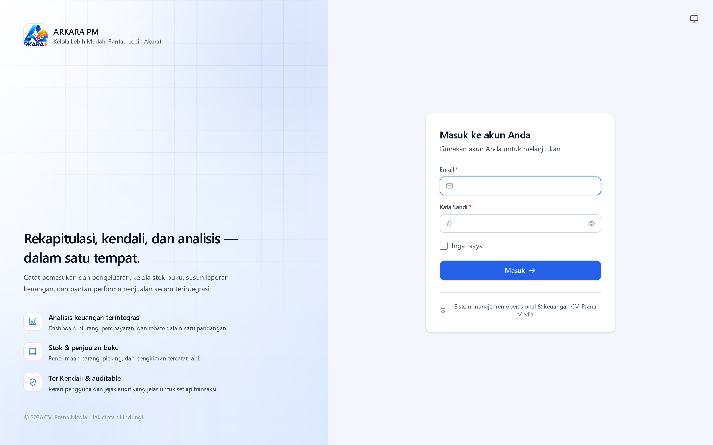
| Bagian layar | Keterangan |
|---|---|
Alamat email akun Anda. Contoh akun latihan: admin@sekolah.test. | |
| Kata Sandi | Kata sandi akun. Ikon mata di ujung kanan kolom dapat ditekan untuk menampilkan atau menyembunyikan apa yang Anda ketik. |
| Ingat saya | Bila dicentang, Anda tetap masuk meski peramban ditutup. Jangan dipakai pada komputer bersama. |
| Masuk | Tombol biru untuk memproses. Dapat juga ditekan dengan menekan Enter dari kolom kata sandi. |
Untuk keperluan latihan, data contoh menyediakan enam akun — satu untuk setiap peran. Semuanya memakai kata sandi yang sama.
| Peran | Nama tampilan | |
|---|---|---|
admin@sekolah.test | Admin | Administrator |
operator@sekolah.test | Operator Pesanan | Operator Pesanan |
gudang@sekolah.test | Gudang | Petugas Gudang |
keuangan@sekolah.test | Keuangan | Bagian Keuangan |
sales@sekolah.test | Sales / PIC | Sales PIC |
pimpinan@sekolah.test | Pimpinan | Pimpinan |
Kata sandi seluruh akun contoh di atas adalah password. Ini hanya
untuk latihan. Pada pemakaian sesungguhnya, kata sandi wajib diganti.
Akun @sekolah.test beserta kata sandi password
adalah pintu terbuka. Administrator harus menghapus atau menggantinya
sebelum aplikasi dipakai untuk data sungguhan.
Aplikasi akan menahan Anda di halaman masuk dan menampilkan pesan bila email atau kata sandi tidak cocok. Perhatikan pesan tersebut — ia menandai kolom mana yang bermasalah.

Setelah masuk, Anda langsung tiba di Dashboard. Inilah layar yang paling sering Anda lihat, dan isinya menyesuaikan peran Anda.
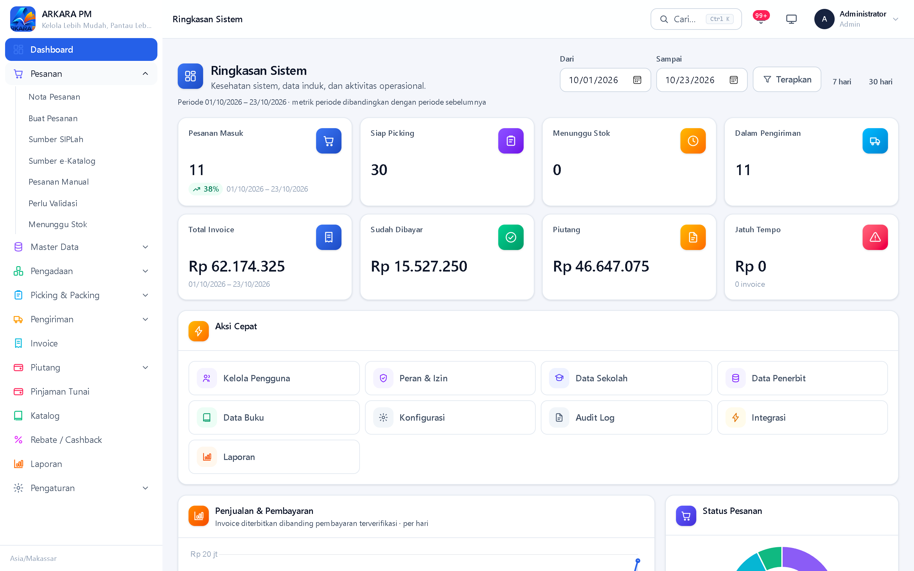
Layar aplikasi terbagi menjadi tiga wilayah tetap:
| Wilayah | Isi |
|---|---|
| Sidebar (kiri) | Daftar menu. Menu dikelompokkan dan dapat dibuka-tutup. |
| Bilah atas (atas) | Judul halaman, pencarian global, notifikasi, pengalih tema, dan menu akun. |
| Isi (tengah) | Konten halaman yang sedang dibuka, misalnya daftar pesanan atau sebuah formulir. |
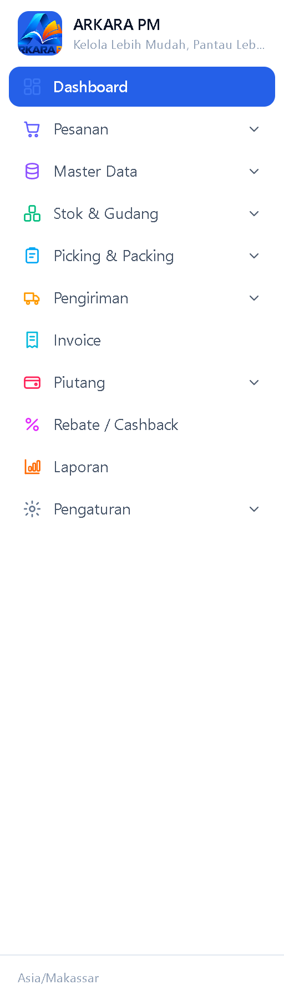
Menu yang Anda lihat bergantung pada peran Anda. Bagian atas sidebar selalu memuat Dashboard; setelah itu ada kelompok menu. Klik nama kelompok untuk membuka daftar isinya, lalu klik nama halaman yang dituju. Menu yang sedang aktif ditandai dengan latar biru.
Sebagian entri memuat Anda ke daftar yang sudah tersaring, misalnya Perlu Validasi membuka daftar pesanan dengan status “Pesanan Diterima”. Ini sekadar jalan pintas; daftar yang sama dapat dicapai lewat menu utama lalu menyaring manual.
Pencarian global mencari sekaligus ke beberapa jenis data — pesanan, invoice, sekolah, dan barang. Buka dengan menekan tombol Cari… atau pintasan Ctrl+K dari halaman mana pun.
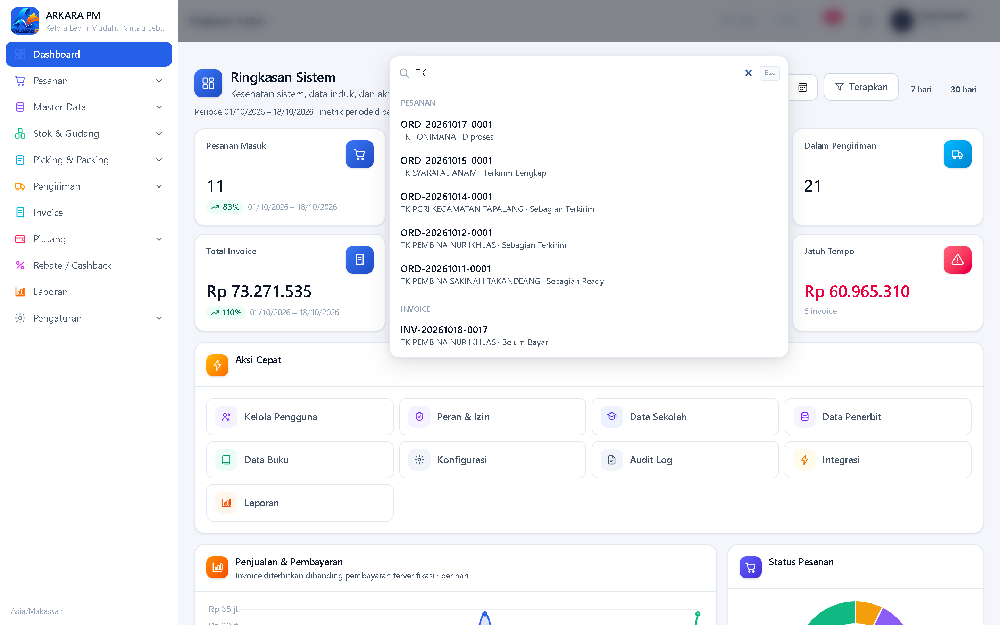
Ikon lonceng di bilah atas menampilkan hal-hal yang perlu perhatian, seperti pesanan yang perlu diproses, invoice yang mendekati atau melewati jatuh tempo, dan pesanan yang menunggu stok. Bila ada angka merah kecil di atas lonceng, berarti ada peringatan yang belum ditangani.
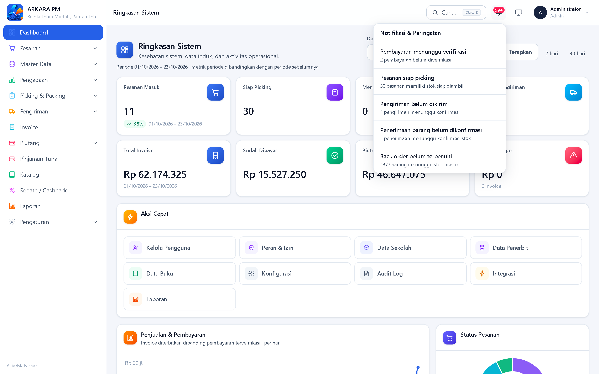
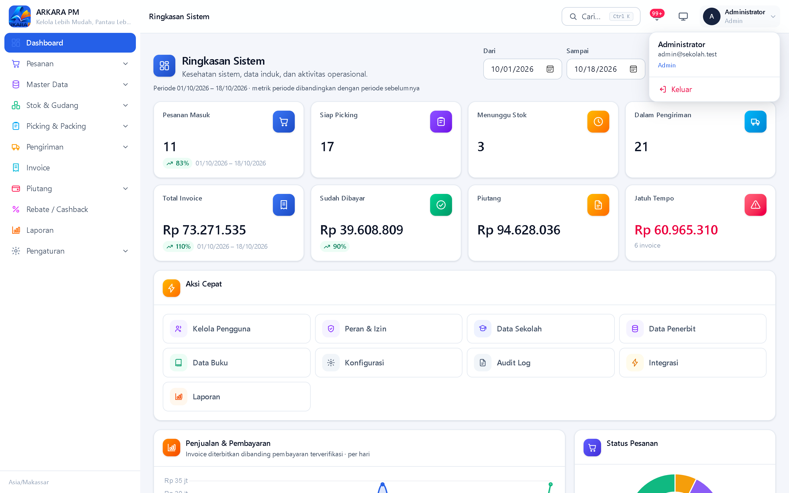
Ikon matahari/bulan/monitor di bilah atas menukar tampilan antara Terang, Gelap, dan Sistem. Pilihan “Sistem” berarti aplikasi mengikuti pengaturan tema sistem operasi Anda. Pilihan ini tersimpan di peramban, jadi tetap berlaku saat Anda kembali lagi.
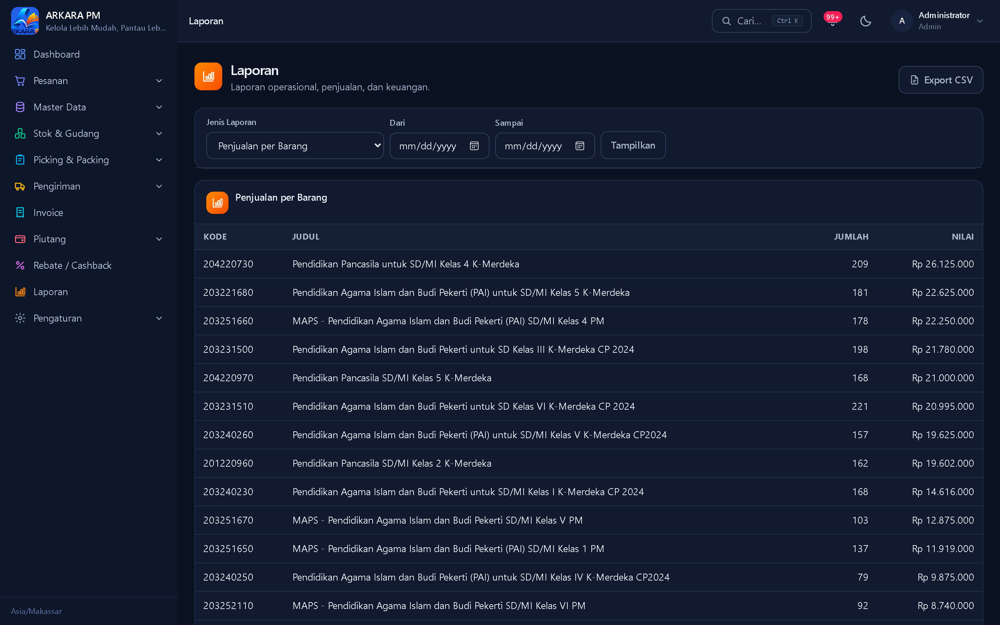
Bila Anda memakai komputer yang dipakai bergantian, jangan hanya menutup tab peramban. Tekan Keluar agar sesi Anda benar-benar berakhir dan orang berikutnya tidak memakai akun Anda.
Aplikasi ini tidak menyediakan menu “ubah kata sandi” untuk pemakai biasa. Bila Anda perlu mengganti kata sandi, hubungi administrator. Administrator dapat mengatur ulang kata sandi melalui menu Pengaturan › Pengguna.
Bagian III
Enam peran, enam pekerjaan yang berbeda. Bagian ini menjelaskan apa yang terlihat dan apa yang boleh dilakukan oleh masing-masing peran.
Aplikasi memakai dua lapis aturan. Pertama, peran menentukan kumpulan izin yang dipegang seseorang. Kedua, setiap halaman dan setiap tombol memeriksa satu izin tertentu.
Nama izin mengikuti pola modul.aksi. Contohnya:
orders.view — boleh melihat daftar pesanan.orders.manage — boleh membuat dan mengubah pesanan.orders.confirm — boleh mengonfirmasi pesanan.
Perhatikan bahwa manage belum tentu mencakup
confirm. Seseorang bisa saja boleh membuat pesanan tetapi tidak
boleh mengonfirmasinya — dan itu memang disengaja.
Bila sebuah menu tidak muncul untuk Anda, biasanya itu karena peran Anda tidak memegang izinnya. Namun tampil-tidaknya menu hanyalah kerapian tampilan: pemeriksaan yang sesungguhnya juga dilakukan di sisi peladen. Mengetik alamat halaman secara langsung pun tetap akan ditolak bila izinnya tidak dimiliki.
Peran Admin memegang izin bertanda bintang (*),
yaitu seluruh izin yang ada. Karena itu Admin dapat membuka apa saja, dan
itulah sebabnya akun Admin harus dijaga ketat.
| Hal | Keterangan |
|---|---|
| Akun contoh | admin@sekolah.test |
| Jumlah izin | 51 izin (seluruhnya) |
| Tugas utama | Mengelola data induk, pengguna, peran, konfigurasi, dan seluruh transaksi. |
| Halaman khusus | Pengguna, Peran & Izin, Profil Perusahaan, Konfigurasi, Integrasi & Impor. |
Admin adalah satu-satunya peran yang dapat mengubah peran dan izin serta mengelola pengguna. Admin juga satu-satunya yang dapat menyunting Profil Perusahaan dan Konfigurasi.
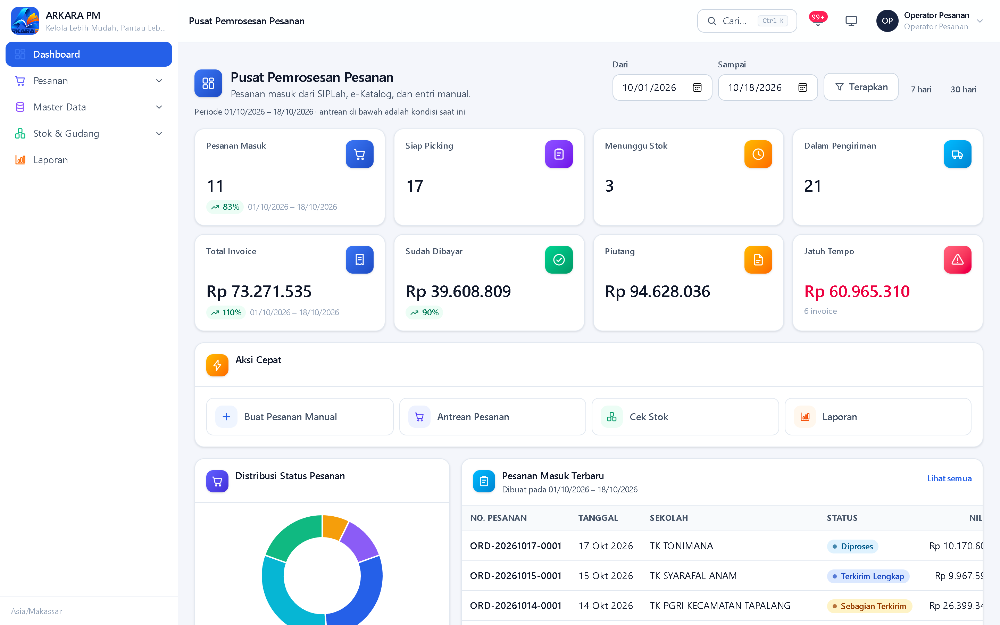
| Hal | Keterangan |
|---|---|
| Akun contoh | operator@sekolah.test |
| Jumlah izin | 9 izin |
| Tugas utama | Menginput pesanan baru dan mengonfirmasinya ke gudang. |
| Izin yang dipegang | Lihat dashboard; lihat sekolah, buku, dan barang lainnya; lihat & kelola pesanan; konfirmasi pesanan; lihat stok; lihat laporan. |
Operator tidak dapat membatalkan pesanan, mengurus penerimaan barang, atau menyentuh invoice. Batas ini membuat alur kerja terjaga: yang menginput tidak sekaligus menghapus jejaknya.
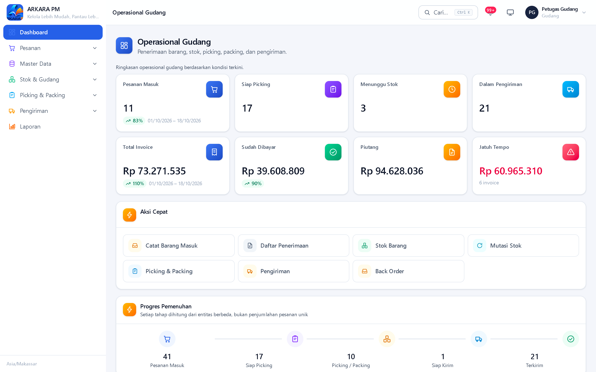
| Hal | Keterangan |
|---|---|
| Akun contoh | gudang@sekolah.test |
| Jumlah izin | 16 izin |
| Tugas utama | Mengurus seluruh barang fisik: penerimaan, stok, picking, packing, pengiriman. |
| Izin yang dipegang | Lihat dashboard; lihat buku & barang lainnya; lihat pesanan; lihat/kelola/konfirmasi penerimaan; lihat stok & penyesuaian stok; lihat/picking/packing; lihat/kelola/konfirmasi pengiriman; lihat laporan. |
Perhatikan: Gudang dapat melihat pesanan, tetapi tidak dapat membuat atau mengubahnya. Gudang juga tidak menyentuh invoice — pemisahan ini mencegah satu orang menguasai barang sekaligus tagihannya.
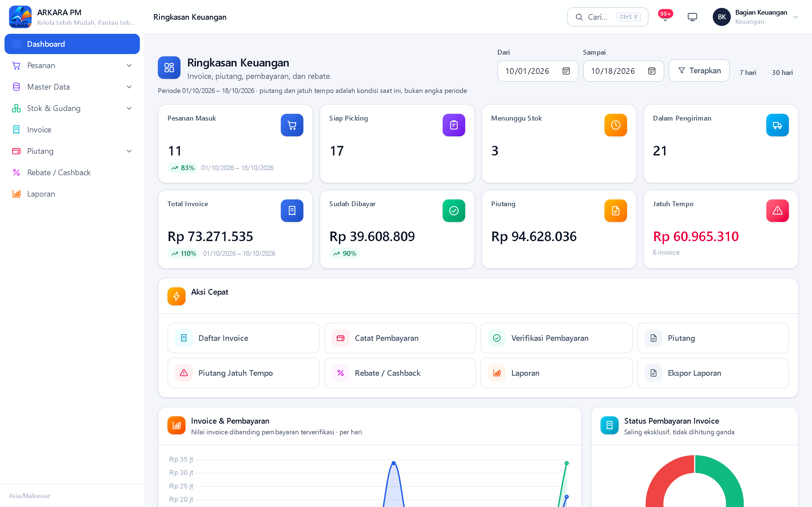
| Hal | Keterangan |
|---|---|
| Akun contoh | keuangan@sekolah.test |
| Jumlah izin | 13 izin |
| Tugas utama | Menerbitkan invoice, mencatat dan memverifikasi pembayaran, memantau piutang, menyetujui dan membayarkan rebate. |
| Izin yang dipegang | Lihat dashboard; lihat sekolah & pesanan; lihat/kelola/terbitkan invoice; lihat/kelola/verifikasi pembayaran; lihat/setujui/bayar rebate; lihat laporan. |
Tidak. Izin rebates.request (mengajukan) dipegang oleh
Sales/PIC, sedangkan Keuangan memegang
rebates.approve dan rebates.pay. Jadi yang
mengajukan dan yang menyetujui adalah orang yang berbeda — sebuah
pengamanan yang lazim.
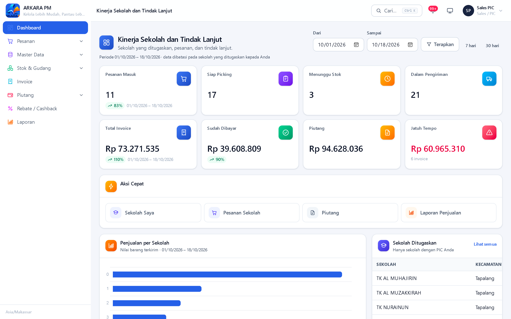
| Hal | Keterangan |
|---|---|
| Akun contoh | sales@sekolah.test |
| Jumlah izin | 11 izin |
| Tugas utama | Menangani sekolah yang ditugaskan, membuat pesanan, mengajukan rebate. |
| Izin yang dipegang | Lihat dashboard, sekolah, buku & barang lainnya; lihat & kelola pesanan; lihat invoice, pembayaran, dan rebate; ajukan rebate; lihat laporan. |
Bila akun Sales tidak memegang izin kelola sekolah, menu Sekolah berubah nama menjadi Sekolah Saya dan hanya menampilkan sekolah yang ditugaskan kepadanya. Pembatasan ini diberlakukan di sisi peladen, bukan sekadar penyaringan tampilan.
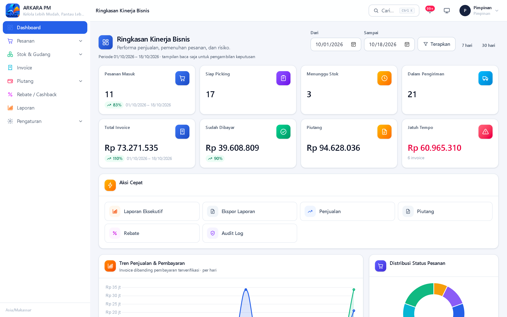
| Hal | Keterangan |
|---|---|
| Akun contoh | pimpinan@sekolah.test |
| Jumlah izin | 8 izin |
| Tugas utama | Memantau kinerja dan menyetujui permintaan rebate. |
| Izin yang dipegang | Lihat dashboard; lihat pesanan, invoice, pembayaran, dan rebate; setujui rebate; lihat laporan; lihat audit log. |
Pimpinan adalah satu-satunya peran selain Admin yang dapat membuka Audit Log. Ini masuk akal: fungsi pengawasan memerlukan akses ke catatan jejak.
Tabel berikut merangkum siapa boleh apa. Tanda • berarti izin dimiliki; tanda — berarti tidak.
| Kewenangan | Admin | Operator | Gudang | Keuangan | Sales | Pimpinan |
|---|---|---|---|---|---|---|
| Lihat dashboard | • | • | • | • | • | • |
| Kelola master data | • | — | — | — | — | — |
| Buat / ubah pesanan | • | • | — | — | • | — |
| Konfirmasi pesanan | • | • | — | — | — | — |
| Batalkan pesanan | • | — | — | — | — | — |
| Penerimaan barang | • | — | • | — | — | — |
| Penyesuaian stok | • | — | • | — | — | — |
| Picking & packing | • | — | • | — | — | — |
| Kelola pengiriman | • | — | • | — | — | — |
| Kelola invoice | • | — | — | • | — | — |
| Kelola pembayaran | • | — | — | • | — | — |
| Verifikasi pembayaran | • | — | — | • | — | — |
| Ajukan rebate | • | — | — | — | • | — |
| Setujui rebate | • | — | — | • | — | • |
| Bayarkan rebate | • | — | — | • | — | — |
| Kelola pengguna & peran | • | — | — | — | — | — |
| Lihat audit log | • | — | — | — | — | • |
Admin dapat mengubah isi sebuah peran melalui Pengaturan › Peran & Izin. Halaman ini menampilkan setiap peran beserta jumlah izin dan jumlah pengguna yang memegangnya. Pilih satu peran untuk membuka matriks izinnya.
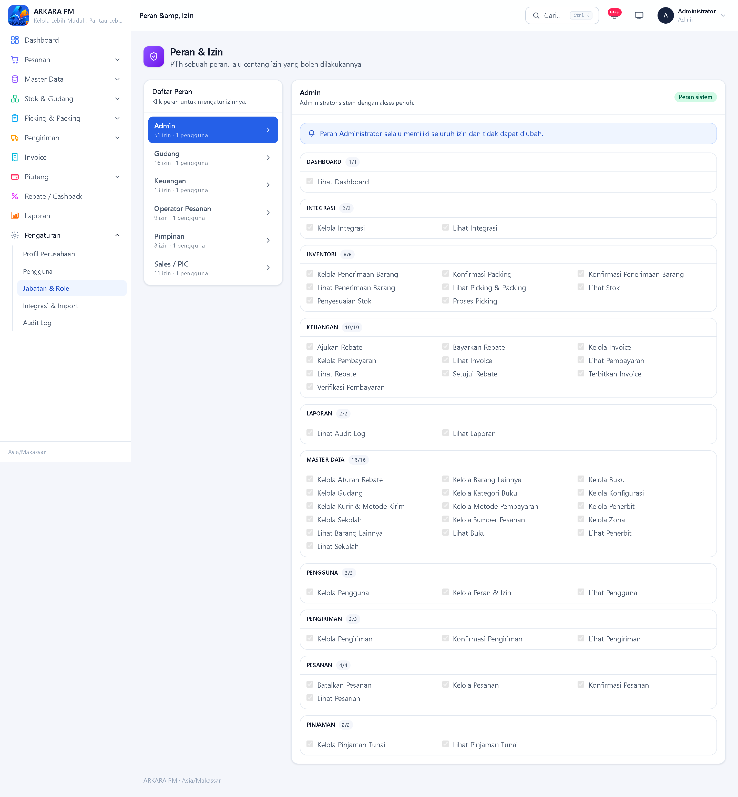
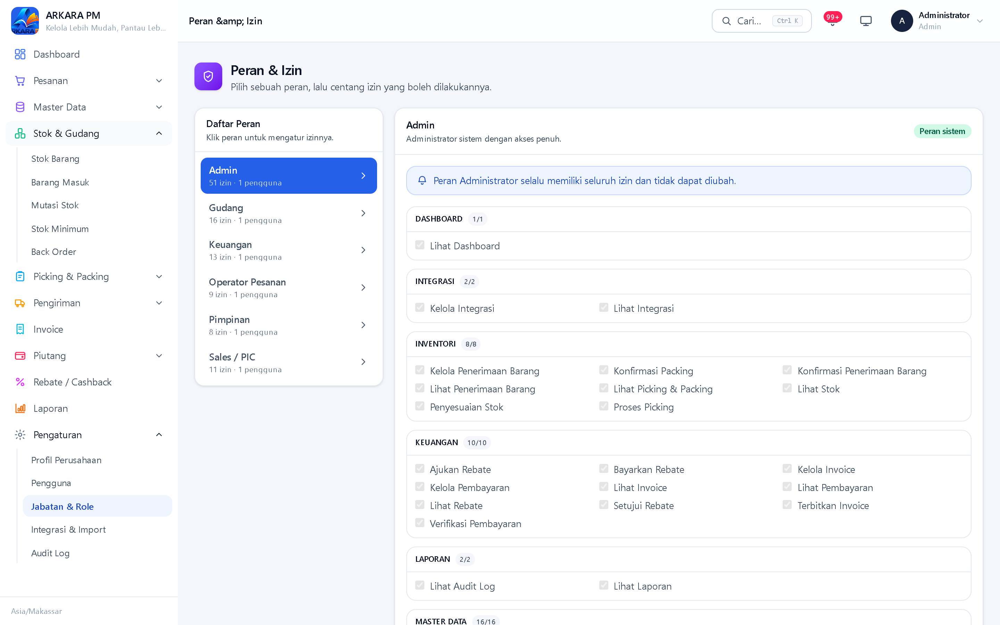
Peran Admin memegang izin bertanda bintang dan tidak dapat dikurangi. Ini pengaman agar tidak ada yang keliru mengunci dirinya sendiri di luar sistem.
Bagian IV
Referensi lengkap setiap layar: apa fungsinya, cara membukanya, apa arti kolomnya, langkah memakainya, dan apa yang seharusnya Anda lihat setelahnya.
Data induk (master data) adalah fondasi. Pesanan tidak bisa dibuat tanpa sekolah dan buku; buku tidak bisa dijual tanpa penerbit; tagihan tidak bisa ditagih tanpa metode pembayaran. Karena itu, perbaiki dulu data induk sebelum menyalahkan modul transaksi.
Seluruh layar data induk memiliki bentuk yang sama: sebuah daftar dengan kolom pencarian, tombol Tambah, dan pada setiap baris tersedia tombol Ubah dan Hapus.
/dashboard.dashboard.view — dimiliki oleh seluruh peran.Karena setiap peran bekerja dengan pertanyaan yang berbeda, dashboard-nya pun berbeda. Perbandingan lengkap keenam dashboard ada di Bagian III. Yang penting dipahami di sini: dashboard bersifat ringkasan. Angka di dalamnya berasal dari data transaksi yang sama dengan yang Anda lihat di menu masing-masing, jadi bila terasa ada kejanggalan, telusuri ke modul asalnya.
Dashboard Admin memiliki pemilih periode (Dari dan Sampai) dengan tombol Terapkan, sehingga ringkasan dapat dipersempit ke rentang tanggal tertentu.
Pada data yang benar-benar baru, sebagian panel dashboard memang belum ada isinya dan akan menampilkan keterangan kosong. Itu wajar. Begitu ada transaksi, angkanya terisi sendiri.
schools.view · Kelola: schools.manage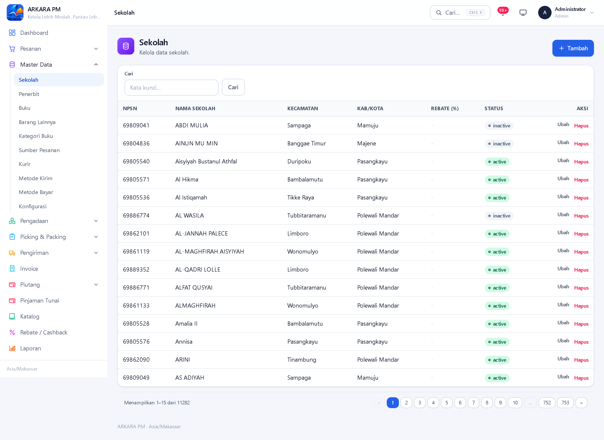
Daftar ini dapat memuat ribuan baris, jadi selalu gunakan pencarian. Kata kunci dicocokkan dengan Nama Sekolah, NPSN, dan Kecamatan.
| Kolom daftar | Arti |
|---|---|
| NPSN | Nomor Pokok Sekolah Nasional — identitas resmi sekolah. |
| Nama Sekolah | Nama sekolah. |
| Kecamatan / Kab/Kota | Wilayah administratif sekolah. |
| Sales/PIC | Petugas yang menangani sekolah ini. |
| Status | Aktif atau Nonaktif. |
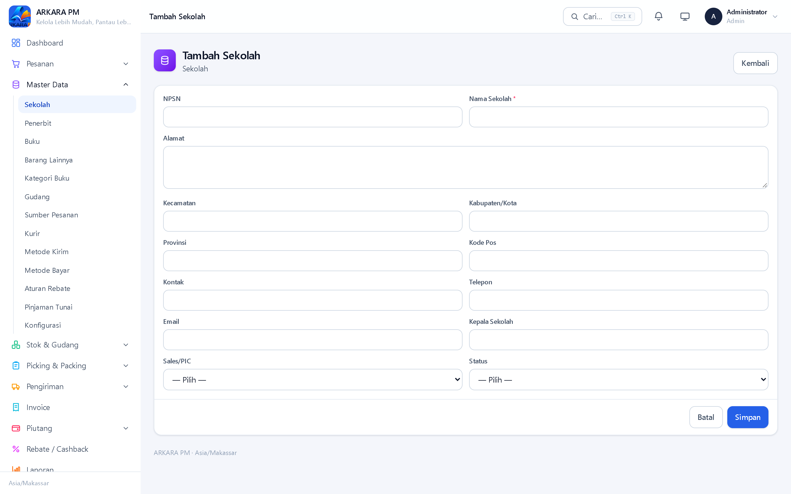
| Kolom formulir | Keterangan |
|---|---|
| NPSN | Opsional, tetapi sebaiknya diisi. Harus unik — tidak boleh sama dengan sekolah lain. |
| Nama Sekolah (wajib) | Nama lengkap sekolah. |
| Alamat, Kecamatan, Kabupaten/Kota, Provinsi, Kode Pos | Data alamat. Alamat dipakai sebagai alamat pengiriman bawaan. |
| Kontak, Telepon, Email | Data narahubung sekolah. |
| Kepala Sekolah | Nama kepala sekolah, untuk keperluan dokumen. |
| Sales/PIC | Pilih pengguna yang bertanggung jawab atas sekolah ini. |
| Status (wajib) | Aktif atau Nonaktif. Sekolah nonaktif tetap tersimpan untuk riwayat. |
publishers.view · Kelola: publishers.manage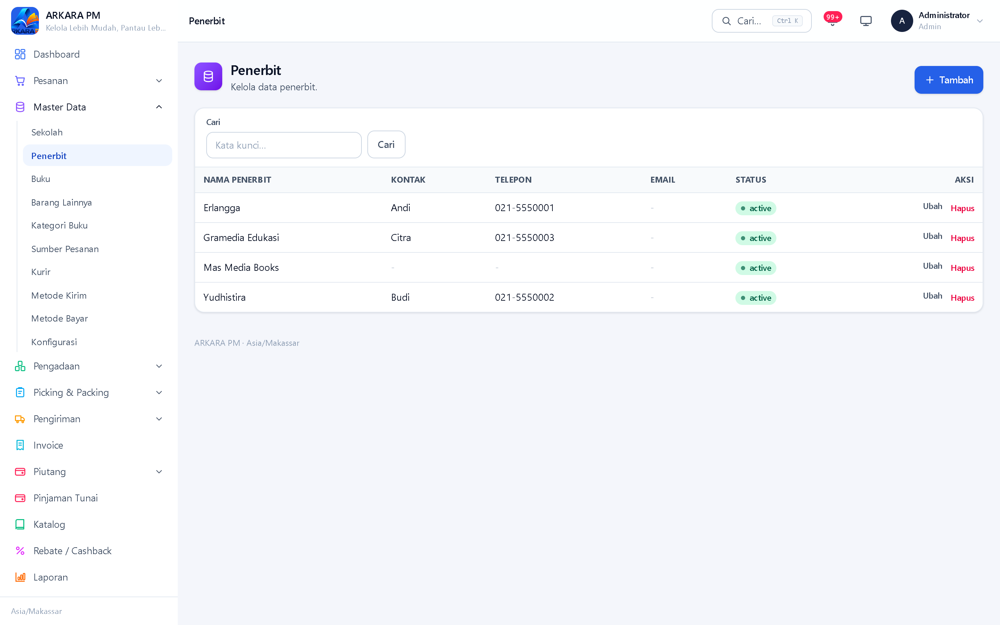
| Kolom formulir | Keterangan |
|---|---|
| Nama Penerbit (wajib) | Nama penerbit. |
| Kontak, Telepon, Email, Alamat | Data narahubung penerbit. |
| Logo | Berkas gambar (JPEG, PNG, atau WebP), maksimal 5 MB. |
| Status (wajib) | Aktif atau Nonaktif. |
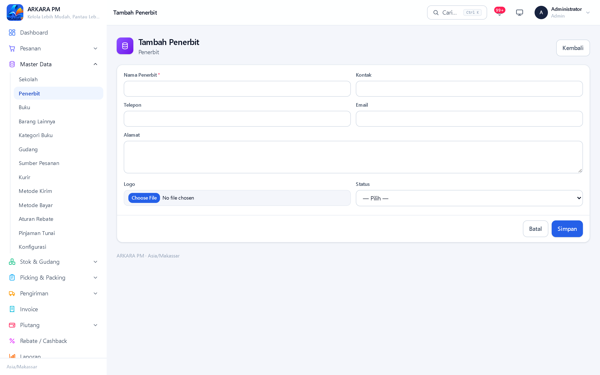
Bila sebuah penerbit masih dipakai oleh buku atau penerimaan barang, tombol hapus akan ditolak dan aplikasi menampilkan pesan bahwa data masih dipakai pada transaksi lain. Untuk menghapusnya, pindahkan atau hapus dulu buku terkait.
categories.manage (lihat dan kelola memakai izin yang sama)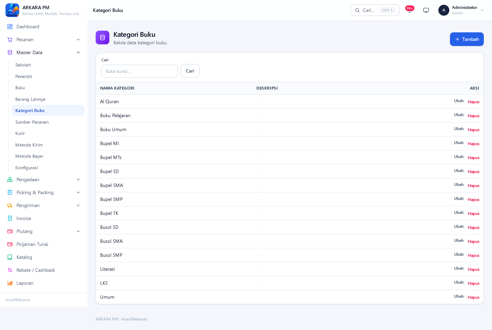
Hanya ada dua kolom: Nama Kategori (wajib) dan Deskripsi. Kategori membantu menyaring laporan, tetapi tidak memengaruhi harga.
books.view · Kelola: books.manage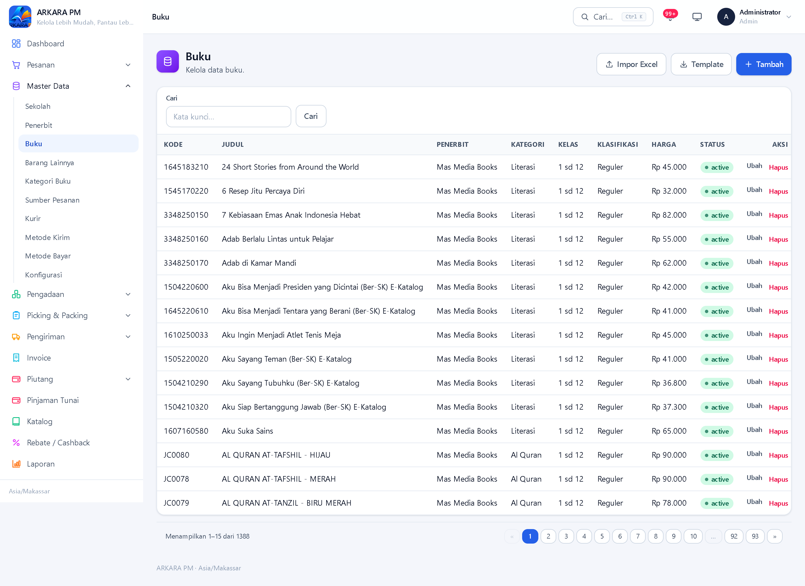
| Kolom daftar | Arti |
|---|---|
| Kode | Kode unik buku (SKU). |
| Judul | Judul buku. |
| Penerbit / Kategori | Penerbit dan kategori buku. |
| Kelas / Mapel | Kelas dan mata pelajaran yang dituju. |
| Klasifikasi | Salah satu dari: Het, Reguler, Depag, Banpem, Alcom. |
| Harga | Harga jual standar. |
| Status | Aktif atau Nonaktif. |
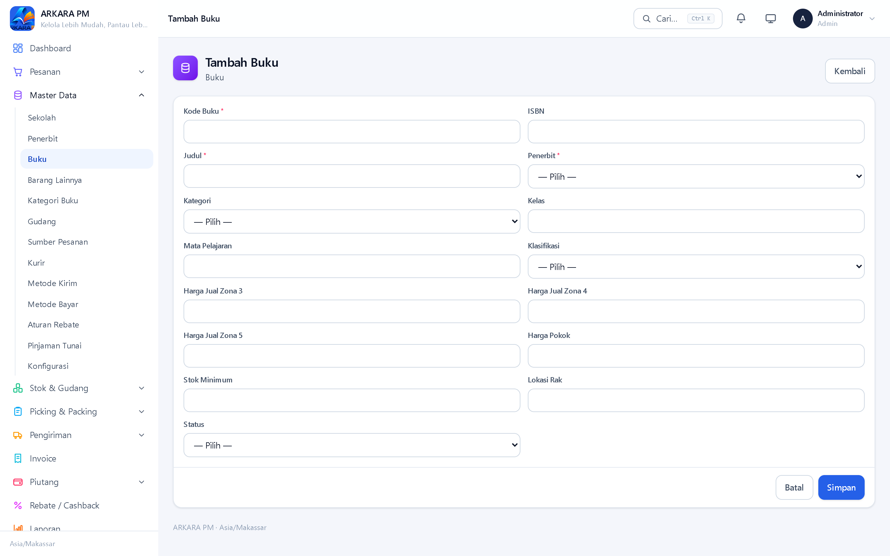
| Kolom formulir | Keterangan |
|---|---|
| Kode Buku (wajib) | Harus unik di seluruh katalog. |
| ISBN | Opsional. Ikut tercari pada pencarian. |
| Judul (wajib) | Judul buku. |
| Penerbit (wajib) | Harus dipilih dari daftar penerbit. |
| Kategori | Opsional. |
| Kelas, Mata Pelajaran | Opsional, memudahkan penyaringan. |
| Klasifikasi | Het, Reguler, Depag, Banpem, atau Alcom. |
| Harga Jual Zona 3 | Harga jual untuk Zona 3. Minimal satu dari tiga harga zona harus diisi. |
| Harga Jual Zona 4 | Harga jual untuk Zona 4. |
| Harga Jual Zona 5 | Harga jual untuk Zona 5. |
| Harga Pokok | Modal. Tidak muncul pada dokumen pelanggan, tetapi berguna untuk analisis. |
| Stok Minimum | Ambang peringatan stok menipis. |
| Lokasi Rak | Mempermudah petugas gudang menemukan barang. |
| Status (wajib) | Aktif atau Nonaktif. |
Harga jual buku berbeda menurut wilayah penjualan. Perbedaan itu diatur sebagai harga zona, dan seluruhnya diisi dari formulir Buku.
Kolom Harga pada daftar Buku menampilkan harga dasar, yang mengikuti harga zona pertama yang terisi (umumnya Zona 3). Bila harga di keranjang berbeda, itu karena Anda memilih Zona Harga lain pada pesanan. Ini bukan kesalahan.
Zona tidak dipilih pada data sekolah. Zona ditentukan per pesanan melalui pemilih Zona Harga, sehingga satu sekolah dapat dilayani dengan harga zona yang berbeda pada pesanan yang berbeda.
Daftar zona (Zona 3, 4, dan 5) disediakan oleh administrator sistem; belum ada layar untuk menambah atau mengganti nama zona dari dalam aplikasi. Yang Anda atur dari aplikasi adalah harga tiap zona pada masing-masing buku.
goods.view · Kelola: goods.manage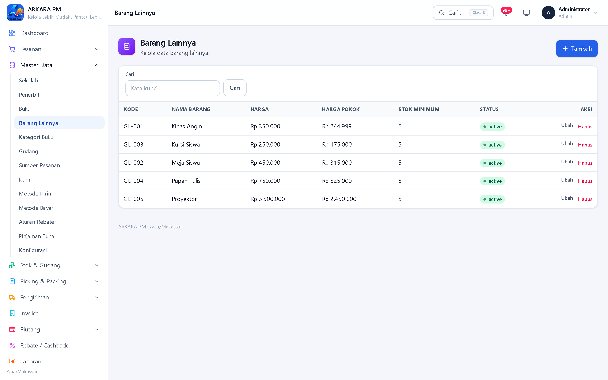
| Kolom formulir | Keterangan |
|---|---|
| Kode Barang (wajib) | Harus unik. |
| Nama Barang (wajib) | Nama barang. |
| Harga Jual (wajib) | Harga jual ke sekolah. |
| Harga Pokok, Stok Minimum, Lokasi Rak | Opsional. |
| Nama Toko | Nama toko asal barang, bila berasal dari pihak ketiga. |
| Satuan | Misalnya “unit”, “buah”, “set”. |
| Status (wajib) | Aktif atau Nonaktif. |
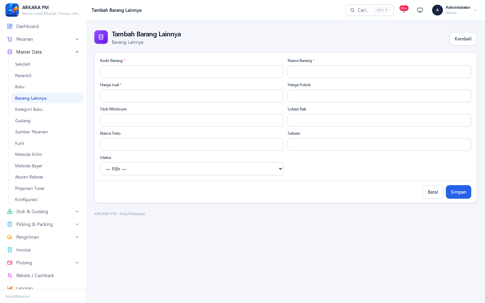
Buku dibebaskan dari PPN, sedangkan barang lainnya tidak. Karena itu jumlah pajak pada invoice akan berbeda tergantung komposisi isinya. Rinciannya ada di Bagian 5.6.
warehouses.manage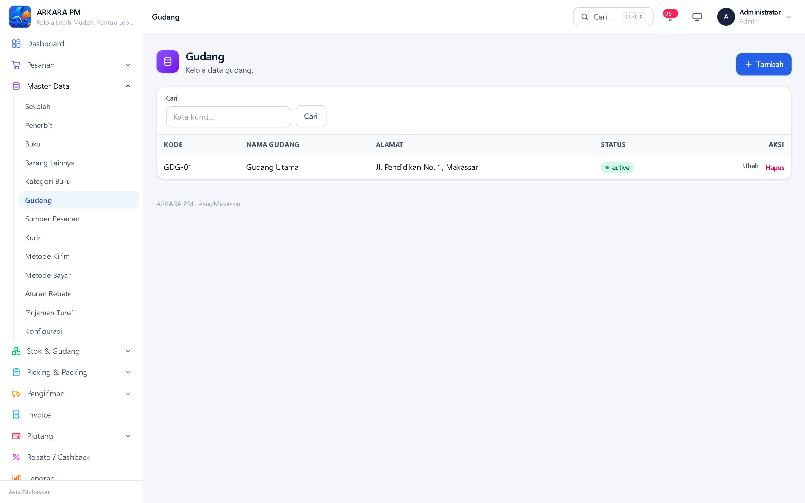
Kolomnya hanya Kode (wajib), Nama Gudang (wajib), Alamat, dan Status (wajib). Salah satu gudang ditandai sebagai gudang bawaan, dan gudang itulah yang dipakai bila tidak ada gudang lain yang memiliki stok memadai.
order-sources.manage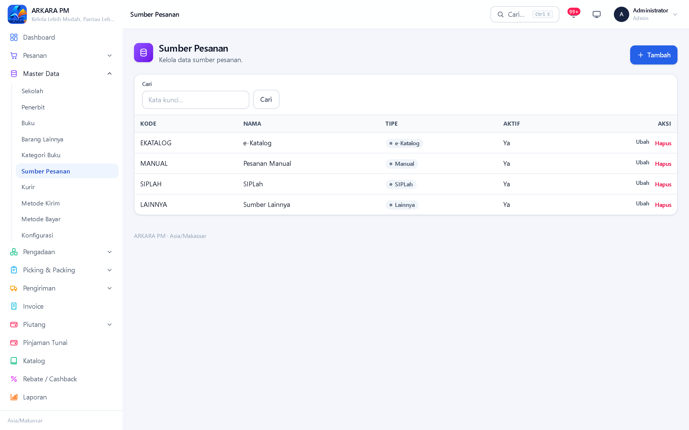
| Kolom | Keterangan |
|---|---|
| Kode / Nama | Penanda sumber pesanan. |
| Tipe | Menentukan perlakuan awal: e-Katalog, Pesanan Manual, SIPLah, atau Sumber Lainnya. |
| Aktif | Bila tidak dicentang, sumber ini tidak lagi muncul sebagai pilihan. |
Setiap pesanan wajib memiliki sumber pesanan. Sumber ini dipakai untuk menyaring daftar pesanan dan untuk laporan.
couriers.manage (mencakup keduanya)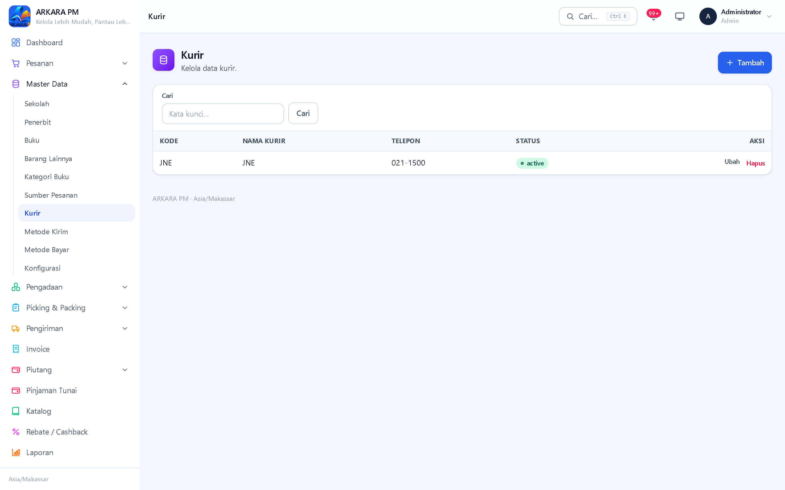
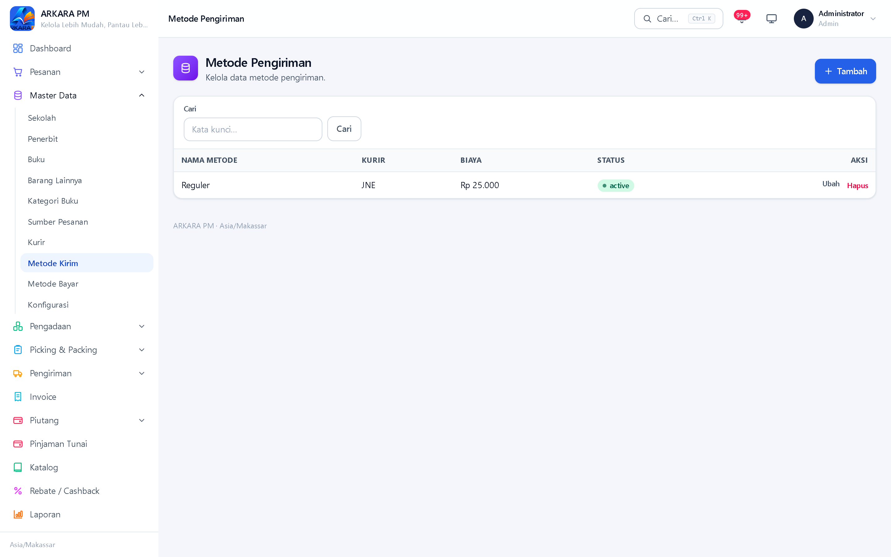
| Pada Kurir | Keterangan |
|---|---|
| Kode (wajib) | Harus unik. |
| Nama Kurir (wajib) | Nama jasa pengiriman. |
| Telepon | Nomor kontak kurir. |
| Status (wajib) | Aktif atau Nonaktif. |
| Pada Metode Kirim | Keterangan |
|---|---|
| Nama Metode (wajib) | Misalnya “Reguler” atau “Kargo”. |
| Kurir | Kurir yang melayani metode ini. |
| Biaya | Biaya pengiriman bawaan untuk metode ini. |
| Status (wajib) | Aktif atau Nonaktif. |
payment-methods.manage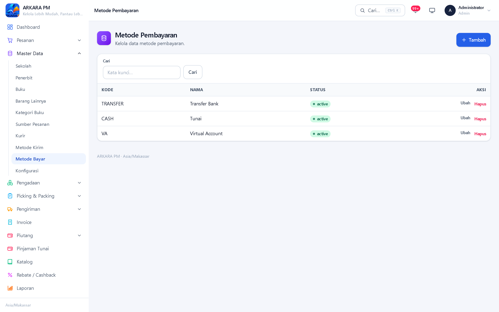
Hanya tiga kolom: Kode (wajib, unik), Nama (wajib), dan Status (wajib). Pilihan ini muncul pada modal Catat Pembayaran.
rebate-rules.manage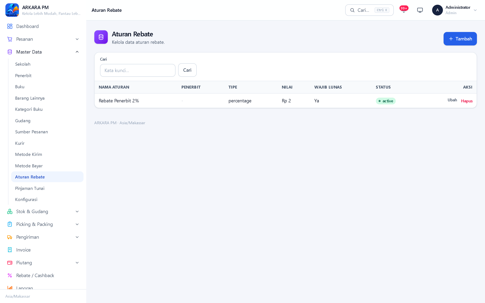
| Kolom formulir | Keterangan |
|---|---|
| Nama Aturan (wajib) | Nama pengenal aturan. |
| Penerbit | Bila diisi, aturan hanya berlaku untuk buku penerbit tersebut. |
| Tipe (wajib) | Persentase (%) — dihitung dari nilai invoice; atau Nominal Tetap. |
| Nilai (wajib) | Angka persentase atau nominal, sesuai tipe. |
| Minimum Invoice | Bila diisi, invoice di bawah nilai ini tidak memenuhi syarat. |
| Wajib Lunas | Bila dicentang, rebate hanya boleh diajukan setelah invoice lunas. |
| Status (wajib) | Aktif atau Nonaktif. |
loans.view · Kelola: loans.manage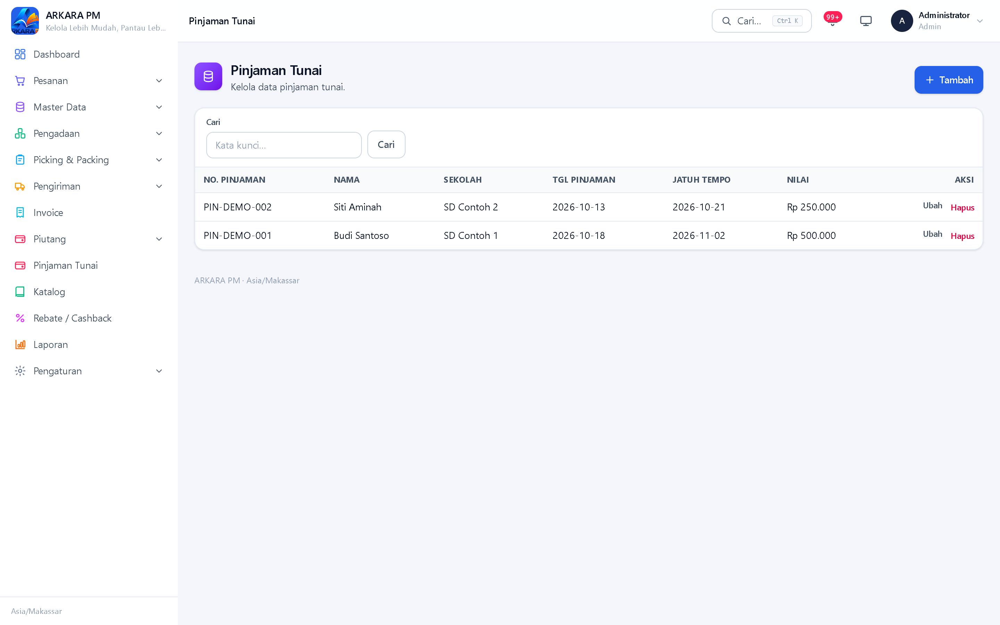
| Kolom formulir | Keterangan |
|---|---|
| Nama (wajib) | Nama penerima pinjaman. |
| Nama Sekolah | Opsional, bila pinjaman dikaitkan ke sebuah sekolah. |
| Tgl Pinjaman (wajib) | Tanggal pinjaman diberikan. |
| Tgl Janji Bayar | Tanggal kesepakatan pengembalian. |
| Nilai Pinjaman (wajib) | Jumlah yang dipinjamkan. |
| Keterangan | Catatan tambahan. |
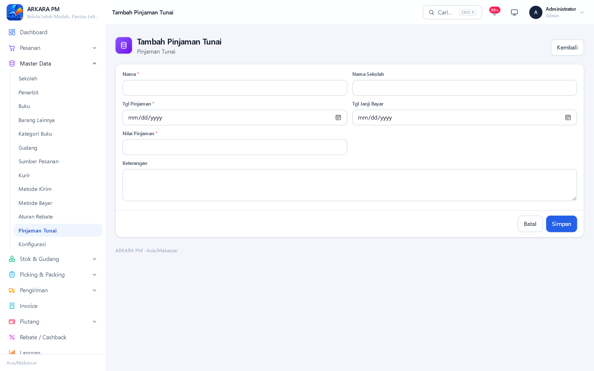
Nomor pinjaman (berawalan PIN) dibuat otomatis oleh aplikasi saat
data disimpan. Anda tidak perlu mengisinya.
settings.manage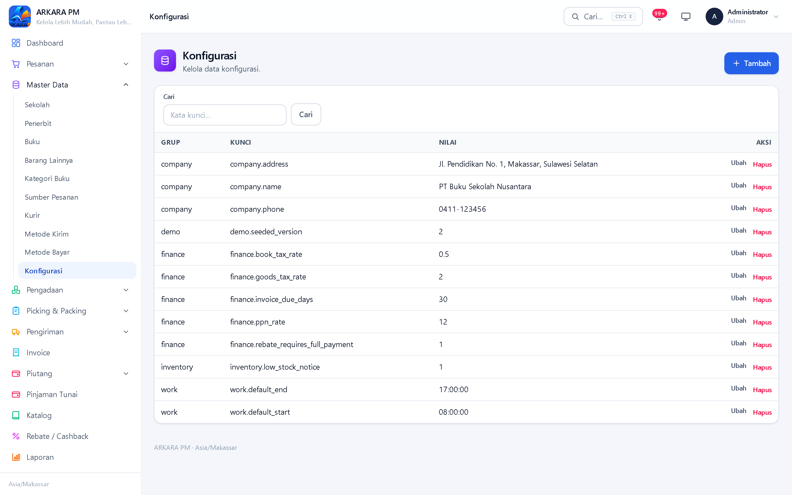
Beberapa kunci konfigurasi yang penting beserta nilainya pada data contoh:
| Kunci | Nilai contoh & arti |
|---|---|
company.name | Nama perusahaan yang dicetak pada dokumen. |
company.address | Alamat perusahaan untuk dokumen. |
company.phone | Telepon perusahaan untuk dokumen. |
finance.invoice_due_days | 30 — jumlah hari sampai invoice jatuh tempo, dihitung dari tanggal terbit. |
finance.rebate_requires_full_payment | 1 (ya) — rebate hanya boleh diajukan untuk invoice yang sudah lunas, kecuali aturan rebate menyatakan lain. |
finance.book_tax_rate | 0.5 — pajak untuk baris buku. Buku tidak dikenai PPN. |
finance.goods_tax_rate | 2 — pajak untuk baris barang lainnya, dihitung dari DPP. |
finance.ppn_rate | 12 — PPN untuk barang lainnya, dihitung dari DPP. |
inventory.low_stock_notice | 1 (ya) — tampilkan peringatan stok menipis. |
Tiga kunci finance.book_tax_rate,
finance.goods_tax_rate, dan finance.ppn_rate
sebaiknya diubah melalui Pengaturan › Profil Perusahaan
(kartu Keuangan), bukan langsung di sini. Formulir itu melakukan
pemeriksaan nilai dan menuliskan seluruh kunci terkait sekaligus. Rumus
pajaknya dijelaskan di Bagian 5.6.
Mengubah finance.invoice_due_days tidak mengubah invoice yang
sudah terbit — hanya invoice baru yang mengikuti. Mengubah nama perusahaan
akan langsung terlihat pada dokumen cetak berikutnya. Ujilah di lingkungan
latihan sebelum menerapkannya di lingkungan nyata.
orders.view · Buat/ubah: orders.manage · Konfirmasi: orders.confirm · Batalkan: orders.cancel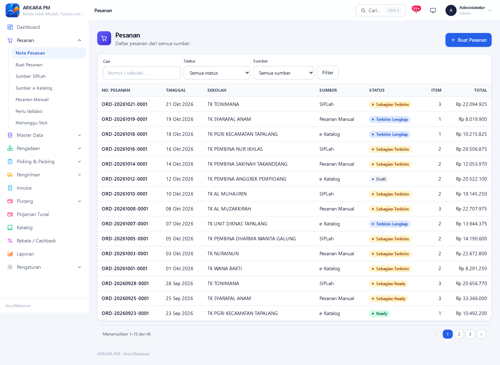
| Kolom | Arti |
|---|---|
| No. Pesanan | Nomor otomatis berformat ORD-YYYYMMDD-nnnn, misalnya ORD-20260701-0001. |
| Tanggal | Tanggal pesanan. |
| Sekolah | Sekolah pemesan. |
| Sumber | Asal pesanan (SIPLah, e-Katalog, manual, dan sebagainya). |
| Status | Keadaan pesanan saat ini. |
| Item | Jumlah baris barang pada pesanan. |
| Total | Nilai pesanan setelah pajak dan diskon. |
Dua penyaring tersedia: status dan sumber. Keduanya dapat dipakai bersamaan, dan hasilnya dapat dicari lagi dengan kata kunci pada kolom pencarian.
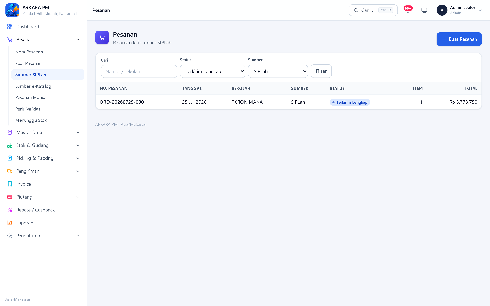
| Status | Arti singkat | Penjelasan |
|---|---|---|
| Draft | Belum diajukan | Pesanan baru dibuat dan masih dapat diubah bebas. Stok belum dipesan. |
| Pesanan Diterima | Menunggu validasi | Pesanan tercatat dan menunggu ditindaklanjuti operator. |
| Diproses | Sudah dikonfirmasi | Sudah dikonfirmasi, tetapi belum ada barang yang berhasil dipesan untuk pesanan ini. |
| Sebagian Ready | Siap sebagian | Sebagian barang sudah tersedia; sisanya menunggu stok. |
| Ready | Siap sepenuhnya | Seluruh barang sudah tersedia dan siap dipicking. |
| Sebagian Terkirim | Sudah dikirim sebagian | Sebagian barang sudah keluar dari gudang. |
| Terkirim Lengkap | Sudah dikirim semua | Seluruh jumlah pada pesanan sudah dikirim. |
| Selesai | Tuntas | Tahap akhir setelah seluruh proses rampung. |
| Dibatalkan | Tidak jadi | Pesanan dibatalkan; reservasi stok dilepas. |
Anda tidak memilih status secara manual. Aplikasi menghitungnya dari kenyataan: berapa yang sudah dipesan, berapa yang sudah dikirim. Begitu gudang mengonfirmasi pengiriman, status pesanan ikut berubah.
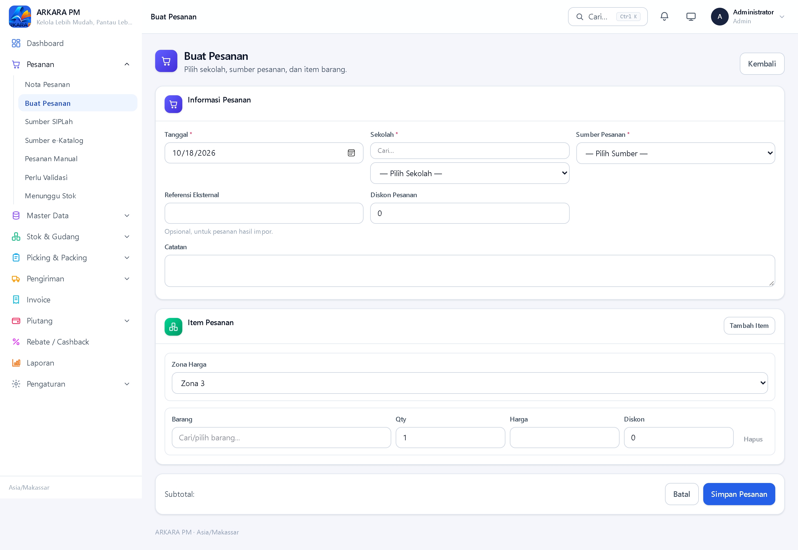
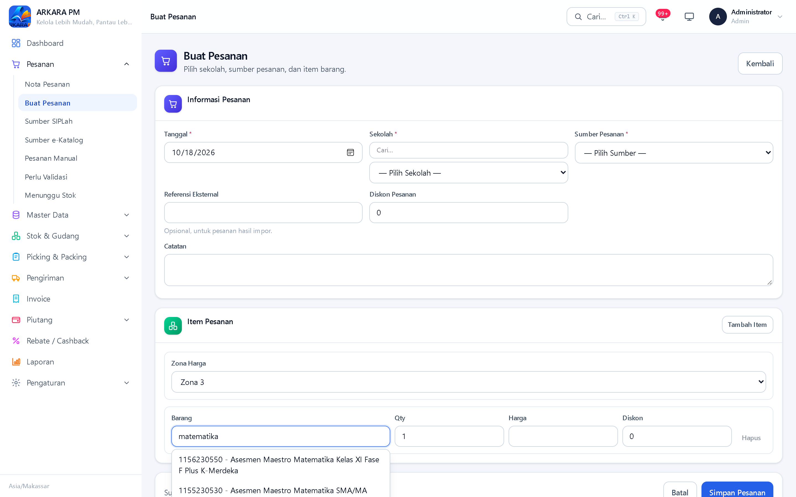
| Kolom | Wajib? | Keterangan |
|---|---|---|
| Tanggal | Ya | Tanggal pesanan. Ikut menentukan nomor dokumen. |
| Sekolah | Ya | Menentukan data pelanggan dan alamat kirim. |
| Sumber Pesanan | Ya | Asal pesanan. |
| Referensi Eksternal | Tidak | Nomor pesanan dari sistem asal. Harus unik per sekolah. |
| Diskon Pesanan | Tidak | Potongan atas keseluruhan pesanan. |
| Catatan | Tidak | Keterangan tambahan. |
| Barang (per baris) | Ya | Harus dipilih dari katalog. |
| Qty (per baris) | Ya | Minimal 1. |
| Harga (per baris) | Ya | Terisi otomatis; boleh disesuaikan. |
| Diskon (per baris) | Tidak | Potongan per baris barang. |
Bila Anda menekan Simpan Pesanan tanpa melengkapi kolom wajib, pesanan tidak akan tersimpan. Aplikasi menampilkan pesan kesalahan di bawah kolom yang bermasalah.

Perbaiki semua kolom yang ditandai, lalu kirim ulang. Isian yang sudah Anda ketik tidak hilang, jadi Anda tidak perlu mengulang dari awal.
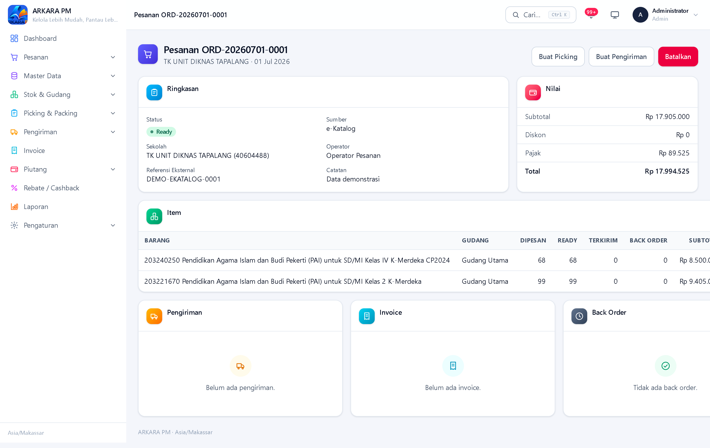
| Kolom pada tabel barang | Arti |
|---|---|
| Dipesan | Jumlah yang diminta sekolah. |
| Ready | Jumlah yang sudah berhasil dipesan di gudang. |
| Terkirim | Jumlah yang sudah keluar dari gudang. |
| Back Order | Sisa yang belum bisa dipenuhi karena stok kurang. |
| Subtotal | Nilai baris setelah diskon baris. |
| Status | Keadaan baris barang tersebut. |
Tombol yang muncul di halaman ini menyesuaikan keadaan pesanan. Pesanan draft memperlihatkan tombol Konfirmasi dan Batalkan. Pesanan yang sudah terkirim lengkap memperlihatkan tombol Terbitkan Invoice.
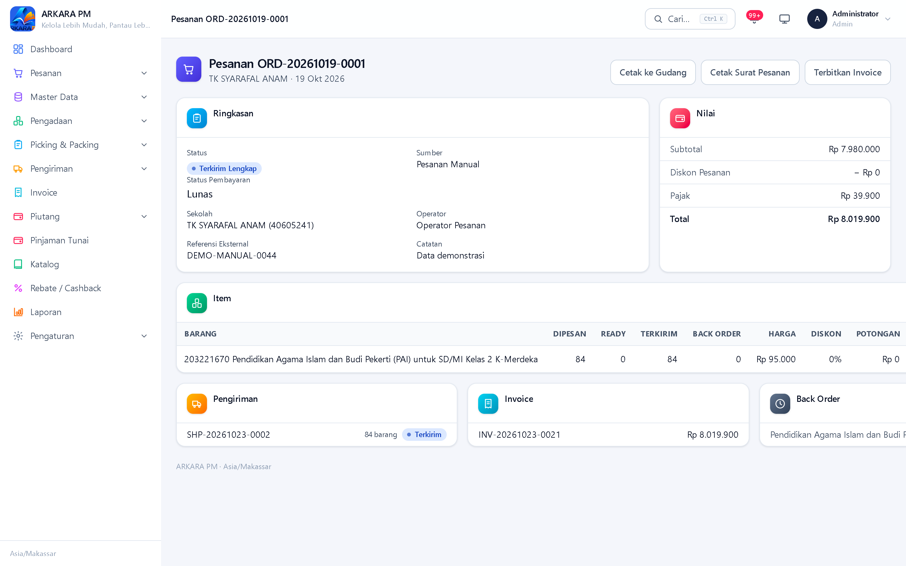
Setelah dikonfirmasi, tiga hal terjadi sekaligus:
Aplikasi hanya memesan sebanyak yang benar-benar tersedia. Sisa yang tidak terpenuhi tetap tercatat, sehingga ketika barang datang nanti (lewat penerimaan barang), kekurangan itu otomatis dialokasikan dengan urutan berdasarkan tanggal pesanan — yang memesan lebih dulu dilayani lebih dulu.
Bila pesanan sudah berjalan (misalnya sudah dikirim sebagian), tombol konfirmasi tidak akan tersedia, dan upaya konfirmasi akan ditolak dengan pesan bahwa pesanan tidak dapat dikonfirmasi pada status saat ini.
Pembatalan akan melepaskan kembali stok yang tadinya dipesan, dan menutup semua back order pesanan tersebut. Pesanan tidak dihapus — ia tetap ada sebagai riwayat dengan status Dibatalkan.
Bila sudah ada barang yang keluar dari gudang, pembatalan akan ditolak. Ini untuk mencegah hilangnya jejak barang yang sudah berpindah tangan.
Halaman cetak nota pesanan dibuka dengan tombol cetak pada detail pesanan,
atau dengan membuka alamat /orders/{nomor}/print. Halaman ini
dirancang untuk dicetak: tekan Ctrl+P lalu pilih
“Simpan sebagai PDF” bila Anda ingin berkasnya, bukan kertas.
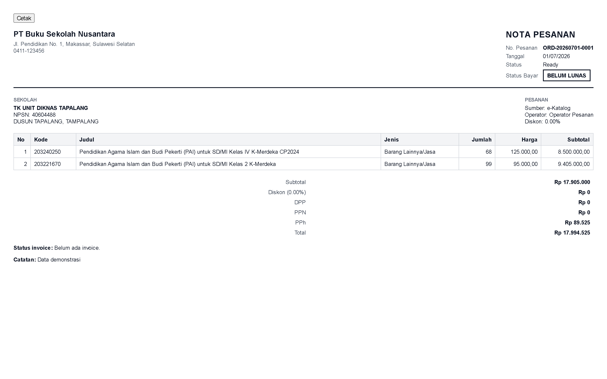
receipts.view · Kelola: receipts.manage · Konfirmasi: receipts.confirm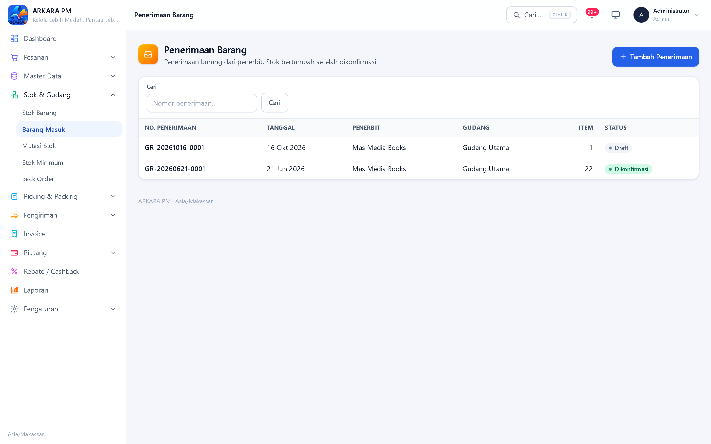
| Kolom | Arti |
|---|---|
| No. Penerimaan | Nomor otomatis berformat GR-YYYYMMDD-nnnn. |
| Tanggal | Tanggal penerimaan. |
| Penerbit | Asal barang. |
| Gudang | Gudang yang menerima. |
| Item | Jumlah baris barang. |
| Status | Draft atau Dikonfirmasi. |
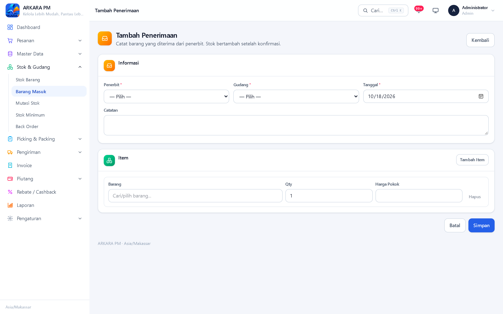
Inilah langkah yang benar-benar mengubah stok. Sebelum dikonfirmasi, penerimaan hanyalah catatan.
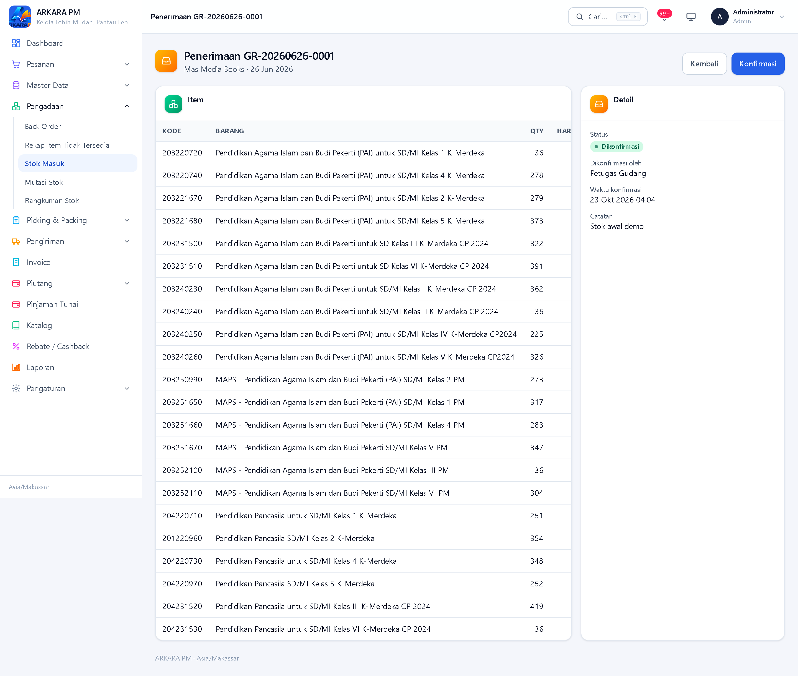
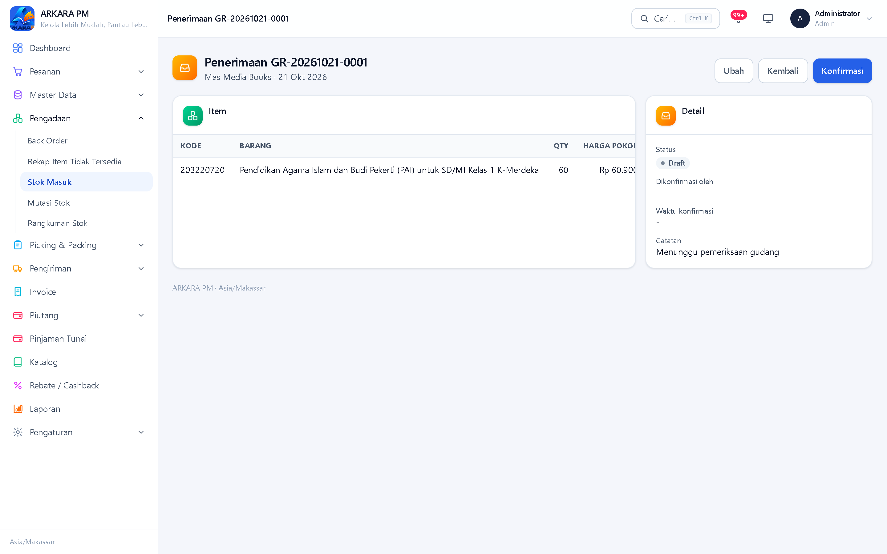
Setelah dikonfirmasi, aplikasi akan:
Bila Anda mengonfirmasi dokumen yang sudah dikonfirmasi, aplikasi akan menolaknya dengan pesan bahwa penerimaan ini sudah dikonfirmasi sebelumnya. Ini mencegah stok bertambah dua kali.
stock.view · Sesuaikan: stock.adjust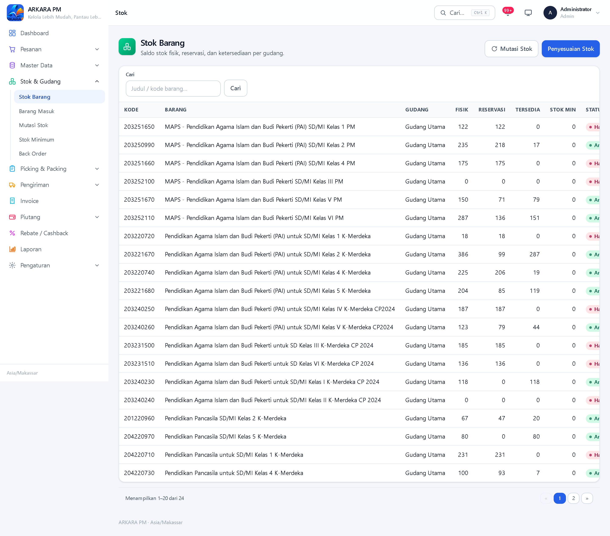
| Kolom | Arti |
|---|---|
| Fisik | Jumlah barang yang benar-benar ada di gudang. |
| Reservasi | Jumlah yang sudah dijanjikan ke pesanan. |
| Tersedia | Fisik dikurangi Reservasi. Inilah yang masih boleh dijual. |
| Stok Min | Ambang peringatan untuk barang ini. |
| Status | Menandai barang yang stoknya di bawah atau sama dengan stok minimum. |
Ini pertanyaan yang paling sering muncul. Barang yang sudah dijanjikan ke sekolah lain secara fisik masih ada di rak, tetapi sudah bukan milik siapa pun lagi untuk dijual. Karena itu yang menentukan ketersediaan adalah kolom Tersedia, bukan Fisik.
Penyesuaian stok dipakai bila ada selisih antara catatan dan kenyataan — misalnya barang rusak, hilang, atau hasil hitung ulang. Setiap penyesuaian wajib disertai alasan, dan alasannya akan tersimpan di riwayat.
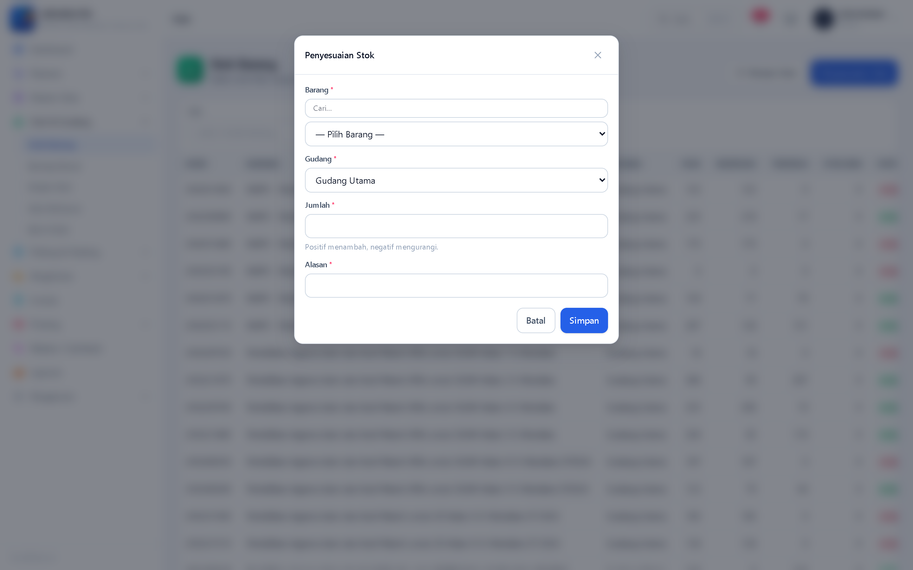
Bila penyesuaian akan membuat stok fisik kurang dari nol, aplikasi menolak dan menampilkan pesan kesalahan pada kolom Jumlah. Periksa kembali angka yang Anda masukkan — mungkin ada kelebihan angka nol, atau barang yang dimaksud berbeda.
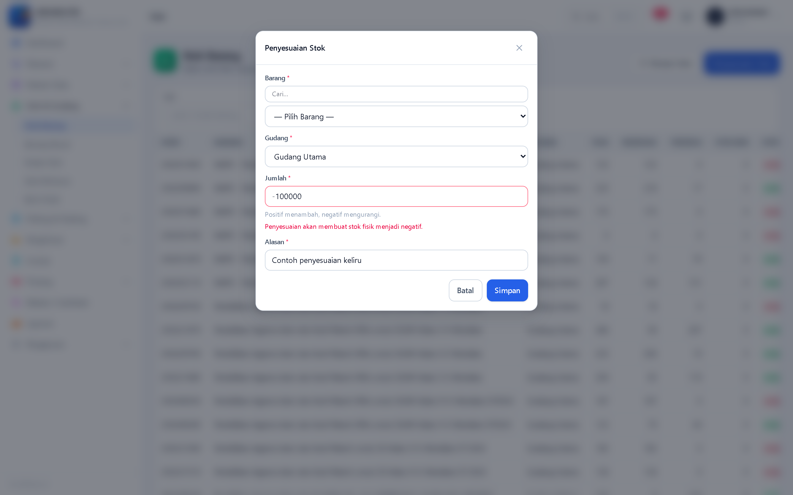
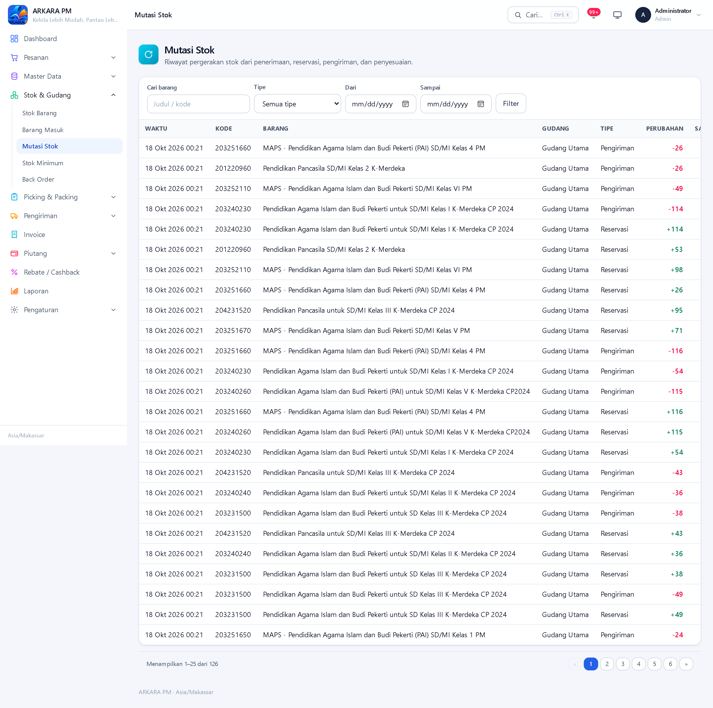
| Kolom | Arti |
|---|---|
| Waktu | Kapan perubahan terjadi. |
| Tipe | Jenis perubahan: Penerimaan, Penyesuaian Masuk/Keluar, Reservasi, Pelepasan Reservasi, atau Pengiriman. |
| Perubahan | Angka perubahan; negatif berarti berkurang. |
| Saldo | Saldo setelah perubahan. Untuk reservasi, saldo yang dimaksud adalah jumlah reservasi. |
| Catatan | Keterangan, misalnya nomor pesanan atau alasan penyesuaian. |
| Oleh | Pengguna yang memicu perubahan. |
Halaman ini dapat disaring menurut tipe perubahan dan rentang tanggal.
fulfillment.view · Catat hasil: fulfillment.pick · Selesaikan packing: fulfillment.packPicking dibuat otomatis dari pesanan. Aplikasi hanya memasukkan barang yang benar-benar sudah tersedia — jadi bila sebuah pesanan baru sebagian siap, picking-nya hanya memuat bagian yang siap itu.
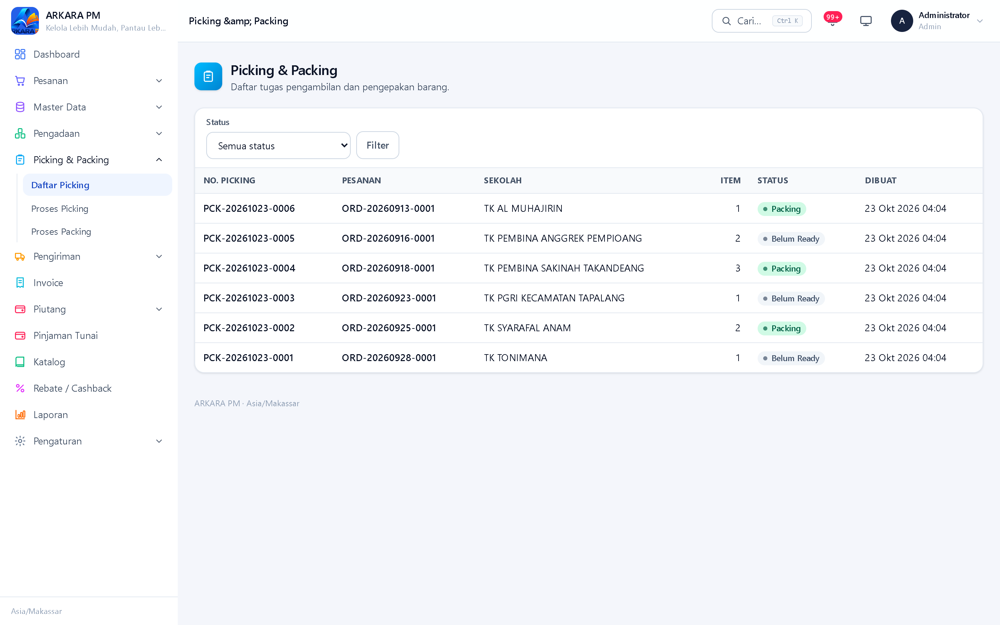
PCK-YYYYMMDD-nnnn.
| Status | Arti |
|---|---|
| Belum Ready | Picking baru dibuat; belum ada yang diambil. |
| Picking | Sedang dalam proses pengambilan. |
| Packing | Barang sudah diambil dan sedang dikemas. |
| Siap Kirim | Sudah dikemas dan siap diserahkan ke pengiriman. |
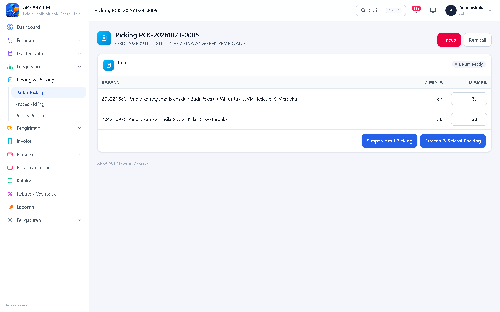
Selisih antara Diminta dan Diambil adalah informasi penting: itulah yang belum bisa dipenuhi. Mengisinya penuh padahal barang kurang hanya akan memindahkan masalah ke tahap pengiriman, tempat masalah itu akan muncul lagi sebagai penolakan.
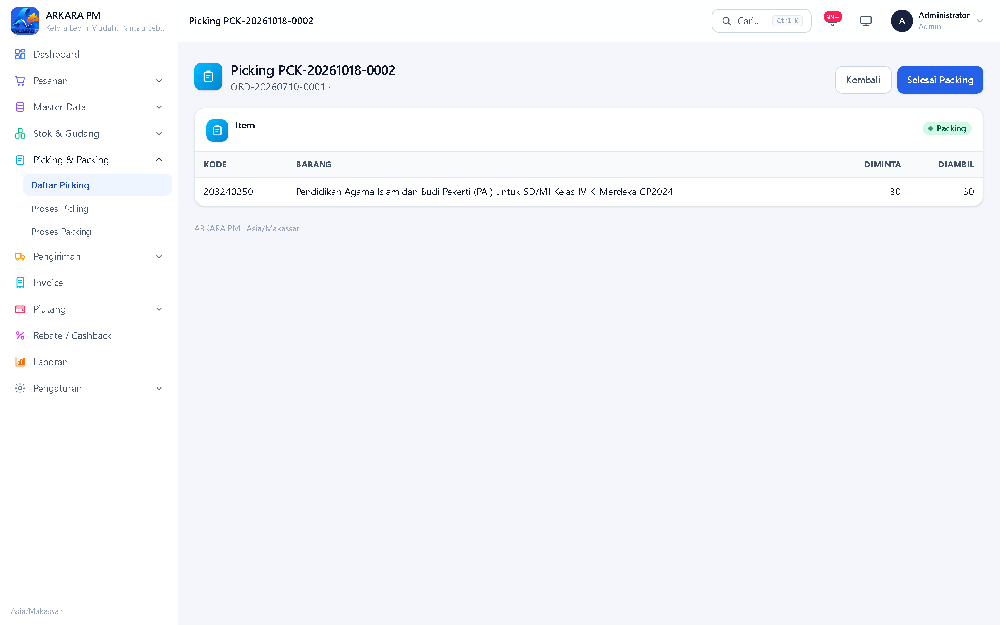
Packing hanya dapat diselesaikan setelah picking selesai dicatat. Bila dicoba lebih dulu, aplikasi menolak dengan pesan bahwa picking harus selesai dipicking sebelum packing.
shipments.view · Kelola/buat: shipments.manage · Konfirmasi & tandai diterima: shipments.confirmSHP-YYYYMMDD-nnnn,
sedangkan nomor surat jalan berformat SJ-YYYYMMDD-nnnn.
| Status | Arti |
|---|---|
| Draft | Pengiriman sudah dibuat tetapi belum dikonfirmasi. Stok belum berkurang. |
| Siap Kirim | Pengiriman disiapkan untuk diberangkatkan. |
| Terkirim | Sudah dikonfirmasi; stok berkurang dan pesanan diperbarui. |
| Diterima | Penerima sudah menandatangani/menerima barang. |
Pengiriman dibuat dalam dua langkah: pilih pesanan, lalu tentukan isinya.

Tanpa foto, konfirmasi akan ditolak dengan pesan “Bukti foto pengiriman wajib dilampirkan.” Syarat berkasnya: gambar JPEG, PNG, atau WebP, maksimal 5 MB.
Konfirmasi pengiriman berdampak besar. Aplikasi akan:
Bila reservasi untuk sebuah barang ternyata lebih kecil daripada jumlah yang hendak dikirim, aplikasi menolak dengan pesan bahwa jumlah kirim melebihi stok yang direservasi. Bila ini terjadi, periksa kondisi stok dan pesanan terkait — jangan memaksa.
Setelah barang benar-benar sampai, buka pengiriman berstatus Terkirim dan klik Tandai Diterima. Hanya pengiriman berstatus Terkirim yang dapat ditandai diterima.
invoices.view · Kelola & batalkan: invoices.manage · Terbitkan: invoices.issue| Kolom | Arti |
|---|---|
| No. Invoice | Nomor otomatis berformat INV-YYYYMMDD-nnnn. |
| Tanggal / Jatuh Tempo | Tanggal terbit dan batas akhir pembayaran. |
| Sekolah | Sekolah yang ditagih. |
| Total | Nilai tagihan termasuk pajak. |
| Dibayar | Jumlah yang sudah masuk dan terverifikasi. |
| Sisa | Total dikurangi yang sudah dibayar. |
| Status | Belum Bayar, Sebagian, Lunas, atau Jatuh Tempo. |
Invoice lahir dari pengiriman, bukan dibuat dari nol. Ada dua jalan untuk menerbitkannya:
Aplikasi menagih hanya jumlah yang belum pernah ditagih. Jadi bila sebuah pesanan dikirim dua kali, invoice kedua tidak akan menagih ulang barang yang sudah ada di invoice pertama.
Ini berarti seluruh barang pada pengiriman tersebut sudah pernah ditagih. Periksa daftar invoice untuk sekolah itu sebelum menganggapnya kesalahan.
Tanggal jatuh tempo dihitung otomatis dari tanggal terbit ditambah jumlah hari
pada konfigurasi finance.invoice_due_days (data contoh: 30 hari).
Pajak dihitung otomatis dan diperlakukan berbeda antara buku dan barang lainnya. Tarifnya dapat diubah oleh Admin melalui Pengaturan › Profil Perusahaan, pada kartu Keuangan.
| Kolom pengaturan | Nilai awal | Dipakai untuk |
|---|---|---|
| Pajak Buku (%) | 0,5 | Setiap baris buku. |
| Pajak Barang Lainnya (%) | 2 | Setiap baris barang lainnya. |
| PPN (%) | 12 | Hanya baris barang lainnya. |
Perhitungan dilakukan per baris barang, dengan aturan berikut.
| Jenis barang | Perlakuan |
|---|---|
| Buku |
Tidak dikenai PPN. Pajak buku = Pajak Buku (%) × nilai baris. Dengan nilai awal 0,5%: pajak buku = 0,5% × harga. |
| Barang lainnya (bukan buku) |
DPP = harga × 100 ÷ 111 PPN = PPN (%) × DPP Pajak barang lainnya = Pajak Barang Lainnya (%) × DPP. Dengan nilai awal: PPN = 12% × DPP, pajak = 2% × DPP. |
Ringkasnya: buku tidak memakai PPN — hanya dikenai pajak buku yang kecil. Barang lainnya memakai keduanya — PPN dan pajak barang lainnya, dan keduanya dihitung dari DPP yang sama.
Pada invoice, baris Pajak memuat gabungan pajak buku dan pajak barang lainnya. Bila invoice hanya berisi buku, isinya pajak buku saja; bila memuat barang lainnya, ditambah pajak barang lainnya. PPN ditampilkan pada baris tersendiri.
DPP tidak ditampilkan sebagai baris tersendiri karena ia bukan nilai yang ditambahkan ke total — ia hanya dasar perhitungan PPN dan pajak barang lainnya. Nilainya tetap tersimpan pada data invoice.
Nilai pajak disimpan pada saat dokumen dibuat. Karena itu, mengubah tarif di Profil Perusahaan tidak mengubah invoice yang sudah terbit maupun pesanan yang sudah tersimpan. Yang berubah adalah perhitungan untuk pesanan dan invoice berikutnya.
Susunan totalnya: Total = Subtotal − Diskon + PPN + PPh. Ingat bahwa PPh mengurangi penerimaan kita, sehingga posisinya ditambahkan pada kolom total sebagai kewajiban potong.
| Bagian | Arti |
|---|---|
| Deskripsi / Qty / Harga / Subtotal | Rincian barang yang ditagih pada invoice ini. |
| Subtotal | Jumlah seluruh baris sebelum pajak. |
| Diskon | Potongan pada invoice. |
| PPN | Pajak Pertambahan Nilai. Baris ini hanya muncul bila invoice memuat barang lainnya. Invoice yang hanya berisi buku tidak menampilkannya. |
| Pajak | Pajak buku untuk baris buku, ditambah pajak barang lainnya untuk baris non-buku. |
| Total | Nilai tagihan akhir. |
| Dibayar / Sisa | Posisi pembayaran saat ini. |
Halaman cetak invoice memakai susunan yang sama, ditambah baris Uang Muka dan Sisa Yang Di Bayar. Catatan di bawah invoice juga menyesuaikan isinya: keterangan pembebasan PPN hanya dicetak untuk invoice yang seluruhnya berisi buku.
Pada halaman detail invoice tersedia tombol Tambah Foto untuk mengunggah bukti transfer dari sekolah. Foto ini tersimpan pada dokumen invoice dan berguna sebagai pembanding saat memverifikasi pembayaran.
Bila invoice sudah memiliki pembayaran, pembatalan akan ditolak dengan pesan bahwa invoice yang sudah memiliki pembayaran tidak dapat dibatalkan. Untuk memperbaikinya, balik dulu pembayarannya (lihat Bagian 5.8), barulah batalkan invoice.
invoices.view| Kolom | Arti |
|---|---|
| No. Invoice | Nomor tagihan. |
| Sekolah | Sekolah yang berutang. |
| Tanggal / Jatuh Tempo | Tanggal terbit dan batas pembayaran. |
| Total / Dibayar / Sisa | Nilai tagihan, yang sudah masuk, dan sisanya. |
| Status | Belum Bayar, Sebagian, Lunas, atau Jatuh Tempo. |
Penyaring yang tersedia: Jatuh tempo, Sebagian dibayar, dan Belum dibayar.
Buka penyaring Jatuh tempo setiap awal minggu, lalu kirimkan pengingat ke sekolah-sekolah yang tercantum. Keterangan menagih lebih awal jauh lebih menyenangkan daripada menagih setelah lewat.
| Kolom | Arti |
|---|---|
| No. Invoice | Tagihan yang sudah dibayar. |
| No. Pesanan | Pesanan yang barangnya belum dikirim. |
| Sekolah | Sekolah yang sudah membayar. |
| Tgl Bayar | Tanggal pembayaran diterima. |
| Tgl Janji Kirim | Tanggal janji pengiriman. |
| Nilai | Nilai yang sudah dibayar tersebut. |
Sekolah sudah membayar, tetapi kita belum menyerahkan barangnya. Setiap baris pada daftar ini adalah kewajiban kita. Daftar ini sebaiknya diperiksa setiap hari oleh bagian gudang dan keuangan.
payments.view · Catat & balik: payments.manage · Verifikasi: payments.verifyPAY-YYYYMMDD-nnnn.
| Status | Arti |
|---|---|
| Draft | Pembayaran tercatat tetapi belum dihitung pada invoice. Sisa piutang belum berkurang. |
| Terverifikasi | Pembayaran sudah sah. Invoice terkait dihitung ulang dan sisa piutang berkurang. |
| Dibalik | Pembayaran dibatalkan pengaruhnya, tetapi riwayatnya tetap tersimpan. |
Inilah hal terpenting pada modul ini. Pembayaran yang baru dicatat berstatus Draft dan belum mengurangi piutang. Baru setelah diverifikasi, uang itu dianggap masuk. Pemisahan ini mencegah angka piutang berubah sebelum uang benar-benar dipastikan masuk ke rekening.
Bila Anda tidak menentukan alokasi, aplikasi membayar invoice sekolah tersebut mulai dari yang jatuh temponya paling awal. Ini kebiasaan akuntansi yang lazim, tetapi bila sekolah meminta uangnya dialokasikan ke invoice tertentu, isilah bagian alokasi secara manual.
Beberapa aturan pengamanan saat mengalokasikan pembayaran:
Setelah uang dipastikan benar-benar masuk, buka baris pembayaran berstatus Draft dan klik Verifikasi. Sejak saat itu sisa piutang pada invoice terkait berkurang.
Bila ternyata terjadi kekeliruan, gunakan Balik. Pembalikan tidak menghapus data — ia menambahkan catatan bahwa pembayaran itu dibatalkan, lalu menghitung ulang invoice terkait. Riwayatnya tetap utuh untuk keperluan audit.
rebates.view · Ajukan: rebates.request · Setujui: rebates.approve · Bayarkan: rebates.payRBT-YYYYMMDD-nnnn. Kolom
Aksi menyesuaikan status masing-masing baris.
| Status | Arti & langkah berikutnya |
|---|---|
| Draft | Belum diajukan. |
| Diajukan | Sudah diajukan, menunggu persetujuan. |
| Menunggu Persetujuan | Masih dalam proses persetujuan. |
| Disetujui | Disetujui; berikutnya dibayarkan. |
| Ditolak | Ditolak, disertai alasan penolakan. |
| Dibayarkan | Selesai; pembayarannya sudah dilakukan. |
Syarat pengajuan yang diperiksa aplikasi:
finance.rebate_requires_full_payment bernilai ya, sehingga syarat ini berlaku umum.settings.manage (hanya Admin)| Kolom | Keterangan |
|---|---|
| Nama perusahaan | Nama yang tercetak pada invoice dan surat jalan. |
| Logo perusahaan | Berkas gambar untuk kepala dokumen. |
| Alamat | Alamat perusahaan. |
| Telepon, Email | Kontak perusahaan. |
| Profil perusahaan (penerbit) | Penerbit yang namanya dipakai pada kepala dokumen. |
| Nama kepala dokumen | Teks yang muncul di bagian atas dokumen cetak. |
Kartu Keuangan pada formulir ini menentukan tarif pajak yang dipakai saat menghitung invoice. Tersedia tiga kolom.
| Kolom | Keterangan |
|---|---|
| Pajak Buku (%) | Pajak untuk baris buku. Buku tidak dikenai PPN. Nilai awal 0,5. |
| Pajak Barang Lainnya (%) | Pajak untuk baris barang lainnya, dihitung dari DPP. Nilai awal 2. |
| PPN (%) | PPN untuk barang lainnya, dihitung dari DPP. Nilai awal 12. |
Baris buku hanya dikenai Pajak Buku — PPN tidak berlaku untuk buku. Baris barang lainnya dikenai PPN sekaligus Pajak Barang Lainnya. Rumus lengkapnya ada di Bagian 5.6.
Invoice dan pesanan yang sudah tersimpan tetap memakai nilai pajak yang dihitung pada saat dokumen itu dibuat. Mengubah tarif di sini memengaruhi perhitungan berikutnya, bukan dokumen yang sudah ada.
users.view · Kelola: users.manage| Kolom | Keterangan |
|---|---|
| Nama | Nama lengkap pengguna. |
| Dipakai untuk masuk. Harus unik. | |
| Kata sandi | Diisi saat membuat akun. Pada mode ubah, biarkan kosong bila tidak ingin menggantinya. |
| Peran | Dapat lebih dari satu, tetapi sebaiknya satu saja agar kewenangan mudah dilacak. |
Bila Anda mencoba menghapus akun yang sedang Anda pakai, aplikasi akan menolak dengan pesan bahwa akun sendiri tidak dapat dihapus. Ini pengaman agar sistem tidak pernah kehilangan administrator terakhirnya.
audit.view (Admin dan Pimpinan)| Kolom | Arti |
|---|---|
| Waktu | Kapan tindakan dilakukan. |
| Pengguna | Siapa yang melakukannya. |
| Aksi | Kode tindakan, misalnya order.confirmed atau payment.verified. |
| Deskripsi | Penjelasan dalam bahasa manusia. |
| IP | Alamat jaringan asal tindakan. |
| Perubahan | Nilai yang berubah, bila dicatat. |
Audit Log adalah tempat pertama yang sebaiknya dibuka ketika ada angka yang dipertanyakan: “siapa yang mengubah ini, dan kapan?”
integrations.view · Sinkronkan: integrations.manage| Kolom | Arti |
|---|---|
| Nama / Kode / Tipe | Identitas sumber pesanan. |
| Aktif | Apakah sumber ini sedang dipakai. |
| Integrasi | Status sambungan ke sumber tersebut. |
| Waktu / Sumber / Arah / Referensi | Rincian setiap percobaan sinkronisasi pada tabel log. |
| Status / Pesan | Hasil sinkronisasi dan keterangannya. |
Halaman ini menyatakan dengan jelas: integrasi tanpa kredensial tidak akan mengimpor data. Jadi bila status integrasi menunjukkan belum tersambung, menekan tombol sinkronisasi tidak akan menghasilkan pesanan baru. Hubungi administrator untuk melengkapi kredensialnya lebih dulu.
Modul laporan dibahas tersendiri di Bagian VI, karena cakupannya cukup luas: sembilan jenis laporan, penyaring tanggal, dan ekspor CSV.
Bagian V
Satu contoh dikerjakan dari awal sampai akhir, dari barang masuk gudang sampai uang diterima — agar Anda melihat bagaimana modul-modul saling menyambung dalam pekerjaan nyata.
Bab ini mengikuti satu kasus: TK Pembina Nur Ikhlas memesan buku pelajaran. Kita kerjakan bertahap, dan di akhir setiap tahap disebutkan apa yang seharusnya berubah — sehingga Anda dapat memeriksa sendiri apakah pekerjaannya berjalan benar.
Satu orang bisa memegang beberapa tahap, tetapi pada organisasi yang lebih besar, tiap tahap dikerjakan orang yang berbeda: Gudang untuk tahap 1–4, Operator untuk tahap 2, Keuangan untuk tahap 8–9, dan Sales untuk tahap 10.
Yang seharusnya berubah:
Yang seharusnya berubah:
ORD-YYYYMMDD-nnnn.Jangan panik, dan jangan menaikkan jumlah secara paksa. Pesanan tetap berjalan sebagai Sebagian Ready, dan sisanya tercatat sebagai back order. Ketika penerimaan barang berikutnya dikonfirmasi, back order itu terisi otomatis berdasarkan urutan tanggal pesanan.
Yang seharusnya berubah: status picking naik menjadi Siap Kirim, dan pesanan kini punya barang yang siap diberangkatkan.
Bila picking dan packing dikerjakan berurutan tanpa jeda, gunakan tombol Simpan & Selesai Packing agar tidak perlu dua kali menyimpan.
Yang seharusnya berubah:
Yang seharusnya berubah: invoice baru muncul di daftar
dengan nomor INV-YYYYMMDD-nnnn, status Terbit, kolom
Dibayar bernilai nol, dan Sisa sama dengan total.
Untuk pesanan berisi buku, PPN seharusnya nol dan PPh hanya 0,5% dari nilai. Bila Anda melihat angka PPN, kemungkinan ada barang non-buku ikut tertagih — yang memang seharusnya begitu.
Yang seharusnya berubah:
Kadang tagihan perlu dibatalkan, misalnya karena salah sekolah atau salah nominal. Urutannya penting:
Invoice yang masih memiliki pembayaran akan menolak pembatalan. Ini mencegah hilangnya keterkaitan antara uang yang sudah masuk dan tagihannya. Membalik pembayaran tidak menghapus riwayat — ia mencatat pembatalan, lalu menghitung ulang invoice.
Yang seharusnya berubah: status rebate bergerak dari Diajukan → Disetujui → Dibayarkan, dan nilai rebate tercatat pada laporan keuangan.
Kesalahan adalah hal biasa. Yang penting adalah memperbaikinya dengan cara yang tidak merusak jejak. Tabel berikut merangkum situasi yang paling sering terjadi.
| Situasi | Cara memperbaiki |
|---|---|
| Salah mengisi alamat atau telepon sekolah | Ubah langsung di Master Data › Sekolah. Data induk tidak memiliki riwayat transaksi, jadi aman diubah. |
| Salah jumlah pada pesanan yang masih Draft | Buka pesanan dan klik Ubah. Pesanan draft masih bebas diubah. |
| Perlu mengubah pesanan yang sudah diproses | Tidak bisa. Aplikasi menolak dengan pesan “Pesanan yang sudah diproses tidak dapat diubah.” Batalkan pesanan tersebut, lalu buat pesanan baru yang benar. |
| Salah mencatat penerimaan barang | Bila belum dikonfirmasi, hapus dokumennya. Bila sudah dikonfirmasi, perbaiki dengan Penyesuaian Stok disertai alasan, jangan menghapus dokumen. |
| Salah mencatat pembayaran | Klik Balik pada pembayaran tersebut, lalu catat ulang yang benar. |
| Salah menerbitkan invoice | Balik pembayaran (bila ada), lalu batalkan invoice, lalu terbitkan ulang dari pengiriman yang benar. |
| Salah mengirim barang | Tidak ada tombol “batal kirim”. Catat pengiriman baru dengan jumlah yang benar, dan gunakan Penyesuaian Stok bila barangnya kembali ke gudang. |
Aplikasi ini dirancang untuk menambah catatan koreksi, bukan menghapus catatan lama. Data yang sudah dipakai pada transaksi memang sulit dihapus — dan itu disengaja. Dengan begitu, laporan bulan lalu tetap dapat dipertanggungjawabkan meski ada kesalahan yang sudah diperbaiki.
Bagian VI
Sembilan laporan siap pakai: apa gunanya, kolom apa saja isinya, penyaring yang berlaku, dan cara mengekspornya.
Kolom Dari dan Sampai hanya muncul pada empat laporan: Penjualan per Sekolah, Penjualan per Penerbit, Penjualan per Barang, dan Ringkasan Pesanan. Lima laporan lainnya selalu menampilkan kondisi saat ini, sehingga tidak perlu rentang tanggal.
Tombol Export CSV mengunduh berkas teks berpemisah koma (.csv). Berkas ini dapat dibuka dengan Excel, tetapi bukan berkas Excel (.xlsx), dan bukan PDF. Untuk membuat PDF, gunakan fasilitas cetak peramban pada tabel yang tampil, atau olah CSV-nya di aplikasi lembar kerja.
Berkas CSV yang diunduh memakai jenis laporan dan rentang tanggal yang sedang tampil. Bila Anda lupa mengatur tanggal, yang terunduh adalah seluruh data. Biasakan memeriksa penyaring sebelum menekan tombol ekspor.
| Kolom | Arti |
|---|---|
| Sekolah | Nama sekolah. |
| Jumlah | Banyaknya barang yang dikirim ke sekolah tersebut. |
| Nilai | Nilai barang yang dikirim. |
Ini penting dan sering disalahpahami. Laporan penjualan hanya menghitung barang yang benar-benar sudah keluar dari gudang. Pesanan yang baru dikonfirmasi tetapi belum dikirim belum terhitung. Pesanan berstatus Draft dan Dibatalkan juga tidak dihitung. Jadi bila sebuah pesanan belum muncul di laporan penjualan, periksa dulu apakah sudah dikirim.
| Kolom | Arti |
|---|---|
| Penerbit | Nama penerbit. |
| Jumlah | Banyaknya barang terjual dari penerbit itu. |
| Nilai | Nilai penjualannya. |
| Kolom | Arti |
|---|---|
| Kode | Kode barang. |
| Judul | Judul buku atau nama barang. |
| Jumlah | Banyaknya unit terjual. |
| Nilai | Nilai penjualannya. |
Laporan ini berguna untuk merencanakan pembelian: judul yang selalu muncul di atas adalah judul yang stoknya harus dijaga.
| Kolom | Arti |
|---|---|
| No. Pesanan | Nomor pesanan. |
| Tanggal | Tanggal pesanan. |
| Sekolah | Sekolah pemesan. |
| Status | Status pesanan saat ini. |
| Dipesan | Total unit yang diminta. |
| Terkirim | Total unit yang sudah dikirim. |
| Nilai | Nilai pesanan. |
Laporan ini adalah cara tercepat menemukan pesanan yang “mandek”: cari baris yang kolom Terkirim-nya masih nol padahal tanggalnya sudah lama.
| Kolom | Arti |
|---|---|
| Sekolah | Nama sekolah. |
| Total Invoice | Jumlah seluruh tagihan ke sekolah itu. |
| Dibayar | Yang sudah dibayar dan terverifikasi. |
| Sisa Piutang | Yang masih harus dibayar. |
| Kolom | Arti |
|---|---|
| No. Invoice | Nomor tagihan. |
| Jatuh Tempo | Tanggal batas pembayaran yang sudah terlewat. |
| Sekolah | Sekolah yang menunggak. |
| Total | Nilai tagihan. |
| Sisa | Yang masih harus dibayar. |
Ekspor CSV laporan ini, lalu urutkan menurut Sisa dari yang terbesar. Itulah daftar prioritas penagihan Anda minggu ini.
| Kolom | Arti |
|---|---|
| Kode / Judul | Identitas barang. |
| Gudang | Gudang tempat stok berada. |
| Fisik | Jumlah nyata di gudang. |
| Reservasi | Jumlah yang sudah dijanjikan ke pesanan. |
| Tersedia | Fisik dikurangi reservasi. |
| Kolom | Arti |
|---|---|
| Kode / Judul | Identitas barang. |
| Gudang | Gudang tempat stok berada. |
| Fisik | Jumlah nyata saat ini. |
| Stok Min | Ambang minimum yang ditetapkan pada data barang. |
Barang yang kolom Stok Min-nya masih nol tidak akan pernah muncul di laporan ini. Bila laporan terasa kosong padahal jelas ada barang yang hampir habis, periksa apakah nilai stok minimum barang tersebut sudah diisi pada formulir Buku atau Barang Lainnya.
| Kolom | Arti |
|---|---|
| No. Pesanan | Pesanan yang masih kekurangan barang. |
| Tanggal | Tanggal pesanan — yang paling atas paling lama. |
| Sekolah | Sekolah yang menunggu. |
| Barang | Judul yang masih kurang. |
| Sisa | Jumlah yang belum bisa dipenuhi. |
Laporan ini adalah daftar belanja Anda: barang yang muncul di sini adalah barang yang perlu dipesan ke penerbit.
| Laporan | Penyaring tanggal | Pertanyaan yang dijawab |
|---|---|---|
| Penjualan per Sekolah | Ya | Sekolah mana yang paling banyak membeli? |
| Penjualan per Penerbit | Ya | Penerbit mana yang bukunya paling laku? |
| Penjualan per Barang | Ya | Judul apa yang paling laku? |
| Ringkasan Pesanan | Ya | Pesanan mana yang belum tuntas? |
| Piutang per Sekolah | Tidak | Berapa utang tiap sekolah sekarang? |
| Invoice Jatuh Tempo | Tidak | Tagihan mana yang sudah telat? |
| Stok per Barang | Tidak | Berapa stok tiap barang sekarang? |
| Stok Menipis | Tidak | Barang apa yang perlu segera dipesan? |
| Back Order | Tidak | Siapa menunggu barang apa? |
Bagian VII
Kumpulan pesan yang benar-benar muncul dari aplikasi, apa artinya, dan apa yang harus Anda lakukan. Disusun berdasarkan sebab, bukan berdasarkan dugaan.
| Pesan yang muncul | Sebab & tindakan |
|---|---|
| These credentials do not match our records. | Email atau kata sandi tidak cocok. Periksa ejaan email dan huruf besar/kecil pada kata sandi. Bila tetap gagal, minta administrator mengatur ulang kata sandi. |
| Too many login attempts. Please try again in … seconds. | Terlalu banyak percobaan gagal. Aplikasi membatasi lima percobaan; setelah itu tunggu sebentar sebelum mencoba lagi. Jangan terus menebak — tunggu, lalu pastikan kredensialnya benar. |
| The email field is required. (atau pesan serupa) | Ada kolom yang belum diisi. Pesan validasi bawaan aplikasi tampil dalam bahasa Inggris. |
Pesan yang berasal dari kerangka kerja dasar (validasi kolom, kegagalan login) memakai bahasa bawaan kerangka kerja, yaitu Inggris. Pesan yang dibuat khusus untuk aplikasi ini — misalnya soal stok atau rebate — berbahasa Indonesia. Keduanya sama-sama sah dan sama-sama berarti.
Bila halaman terbuka tetapi tampak seperti dokumen tanpa gaya — tanpa warna biru, tanpa sidebar yang rapi — biasanya berkas tampilan gagal dimuat. Ini bukan kesalahan Anda, dan biasanya bukan kesalahan data.
Keadaan ini biasanya muncul ketika penunjuk peladen pengembangan
(public/hot) tertinggal sementara peladen pengembangan tidak
berjalan. Menghapus berkas tersebut membuat aplikasi kembali memakai berkas
tampilan hasil bangun di public/build.
Sebelum melaporkan sebagai kesalahan, periksa tiga hal ini secara berurutan:
Aplikasi menampilkan keterangan yang berbeda-beda untuk daftar kosong, misalnya “Belum ada stok tercatat.”, “Belum ada aktivitas tercatat.”, atau “Tidak ada data untuk filter ini.” Yang terakhir menandakan penyaring Anda memang tidak menemukan apa pun — bukan bahwa datanya hilang.
| Pesan yang muncul | Arti & tindakan |
|---|---|
| Pesanan yang sudah diproses tidak dapat diubah. | Pesanan sudah melewati tahap draft. Batalkan pesanan tersebut lalu buat pesanan baru yang benar. |
| Pesanan ini tidak dapat dikonfirmasi pada status saat ini. | Pesanan sudah berjalan (misalnya sudah dikirim sebagian). Konfirmasi hanya berlaku untuk pesanan Draft atau Pesanan Diterima. |
| Pesanan tidak memiliki item. | Pesanan dibuat tanpa barang. Ubah pesanan dan tambahkan minimal satu barang. |
| Pesanan harus memiliki minimal satu item. | Sama seperti di atas — formulir dikirim tanpa baris barang. |
| Pesanan yang sudah dikirim sebagian tidak dapat dibatalkan. | Sudah ada barang yang keluar gudang. Pembatalan tidak dimungkinkan; selesaikan sisanya atau buat pengiriman penyesuaian. |
| Referensi pesanan eksternal ini sudah pernah diimpor untuk sekolah tersebut. | Nomor referensi dari sistem luar sudah dipakai. Periksa daftar pesanan sekolah itu, atau kosongkan kolom referensinya bila memang bukan impor. |
Bila formulir menolak disimpan, jangan menekan tombol berulang kali. Baca pesan yang muncul dan perbaiki kolom yang ditandai — biasanya hanya satu atau dua kolom. Isian lain tetap tersimpan, jadi Anda tidak perlu mengulang.
| Pesan yang muncul | Arti & tindakan |
|---|---|
| Penyesuaian akan membuat stok fisik menjadi negatif. | Angka pengurangan melebihi stok yang ada. Periksa jumlahnya; mungkin ada kelebihan angka nol, atau barang yang dipilih berbeda. |
| Jumlah penyesuaian tidak boleh nol. | Isi angka selain nol, positif maupun negatif. |
| Penerimaan barang ini sudah dikonfirmasi sebelumnya. | Stok sudah pernah ditambah dari dokumen ini. Ini pengaman ganda; jangan diulang. |
| Penerimaan barang tidak memiliki item. | Dokumen penerimaan kosong. Tambahkan barang lebih dulu, baru konfirmasi. |
Ini bukan kerusakan. Semua barang fisik sudah dijanjikan ke pesanan lain, sehingga tidak ada yang tersisa untuk dijual. Lihat kolom Reservasi untuk memastikan. Solusinya: tambah stok lewat penerimaan barang, atau selesaikan pengiriman pesanan yang menahan stok tersebut.
| Pesan yang muncul | Arti & tindakan |
|---|---|
| Belum ada item yang siap dipicking untuk pesanan ini. | Belum ada stok yang bisa dipesan untuk pesanan tersebut. Konfirmasi pesanannya lebih dulu, dan pastikan stok sudah masuk. |
| Picking ini tidak dapat diubah pada status saat ini. | Picking sudah selesai atau sudah dikemas. Buat picking baru dari pesanan bila memang perlu menambah. |
| Picking harus selesai dipicking sebelum packing. | Simpan hasil picking lebih dulu. Baru setelah itu packing dapat diselesaikan. |
| Pesan yang muncul | Arti & tindakan |
|---|---|
| Pesanan belum dikonfirmasi sehingga belum dapat dikirim. | Konfirmasi pesanan lebih dulu di halaman detailnya. |
| Tidak ada kuantitas yang siap dikirim. | Belum ada barang yang dipicking dan dikemas, atau semuanya sudah dikirim. Periksa daftar picking. |
| Jumlah kirim untuk barang #N melebihi sisa yang siap dikirim (x). | Jumlah pada kolom kirim lebih besar daripada yang tersedia. Kecilkan angkanya menjadi paling banyak x. |
| Jumlah kirim melebihi stok yang direservasi untuk barang #N. | Terjadi ketidaksesuaian antara reservasi dan jumlah kirim. Jangan dipaksa; periksa kondisi stok dan pesanan terkait, lalu laporkan bila menetap. |
| Pesanan ini sudah dikonfirmasi. | Pengiriman sudah dikonfirmasi sebelumnya. Stok sudah berkurang; jangan diulang. |
| Hanya pengiriman yang sudah dikirim yang dapat ditandai diterima. | Konfirmasi kirim lebih dulu, baru tandai diterima. |
| Bukti foto pengiriman wajib dilampirkan. | Pilih berkas gambar lebih dulu. Syaratnya JPEG, PNG, atau WebP, maksimal 5 MB. |
| Bukti pengiriman maksimal 5 MB. | Perkecil ukuran foto, lalu unggah ulang. |
Foto dari telepon sering berukuran lebih dari 5 MB. Cara paling cepat: kirim foto itu ke diri sendiri lewat perpesanan (yang otomatis memperkecil ukurannya), lalu unggah hasil kirimannya.
| Pesan yang muncul | Arti & tindakan |
|---|---|
| Pengiriman belum dikonfirmasi sehingga belum dapat diinvoice. | Konfirmasi pengiriman lebih dulu, baru terbitkan invoice. |
| Belum ada pengiriman terkonfirmasi untuk diinvoice. | Pesanan belum punya pengiriman yang terkonfirmasi. |
| Tidak ada kuantitas yang dapat diinvoice (semua sudah pernah diinvoice). | Barang pada pengiriman itu seluruhnya sudah ditagih. Periksa daftar invoice sekolah tersebut. |
| Invoice membutuhkan data sekolah. | Data sekolah pada pesanan tidak lengkap. Lengkapi dulu di Master Data. |
| Invoice yang sudah memiliki pembayaran tidak dapat dibatalkan. | Balik dulu pembayarannya di halaman Riwayat Pembayaran, baru batalkan invoice. |
| Pesan yang muncul | Arti & tindakan |
|---|---|
| Invoice bukan milik sekolah pada pembayaran ini. | Alokasi diarahkan ke invoice sekolah lain. Pilih invoice milik sekolah yang sama. |
| Jumlah alokasi harus lebih dari nol. | Isi angka lebih dari nol pada kolom alokasi. |
| Total alokasi melebihi jumlah pembayaran. | Jumlah alokasi lebih besar daripada uang yang diterima. Kurangi alokasinya. |
| Alokasi melebihi sisa tagihan invoice. | Sisa tagihan invoice lebih kecil daripada alokasi. Periksa sisa terkini. |
Ini bukan kesalahan. Pembayaran yang baru dicatat berstatus Draft dan belum mengurangi piutang. Piutang baru berkurang setelah pembayaran diverifikasi. Periksa kolom Status pada baris pembayaran tersebut.
| Pesan yang muncul | Arti & tindakan |
|---|---|
| Invoice harus lunas sebelum rebate dapat diajukan. | Selesaikan pembayaran invoice tersebut sampai lunas, baru ajukan rebate. |
| Nilai invoice di bawah minimum aturan rebate. | Nilai tagihan belum memenuhi minimum yang disyaratkan aturan. Pilih aturan lain, atau ajukan setelah ada tagihan berikutnya. |
| Rebate untuk invoice dan aturan ini sudah pernah diajukan. | Pengajuan ganda ditolak. Periksa daftar rebate untuk invoice tersebut. |
| Rebate ini tidak dapat disetujui pada status saat ini. | Rebate sudah disetujui, ditolak, atau dibayarkan. Lihat kolom Status. |
| Hanya rebate yang disetujui yang dapat dibayarkan. | Setujui rebate lebih dulu, baru bayarkan. |
| Rebate yang sudah dibayarkan tidak dapat ditolak. | Sudah selesai. Tidak ada langkah lanjutan. |
| Pesan yang muncul | Arti & tindakan |
|---|---|
| <Nama data> tidak dapat dihapus karena masih dipakai pada transaksi lain. | Data ini terpakai pada pesanan, penerimaan, atau dokumen lain. Pindahkan atau hapus dulu data yang menggunakannya. |
| Tidak dapat menghapus akun sendiri. | Ini pengaman agar sistem tidak kehilangan administrator terakhirnya. Minta administrator lain untuk menghapusnya. |
Ketika penghapusan ditolak karena data masih terpakai, aplikasi menampilkan pesan merah di bagian atas halaman dan data tidak terhapus.

Beberapa proses memang dilindungi dari pengulangan (misalnya konfirmasi penerimaan dan konfirmasi pengiriman akan menolak yang kedua). Namun pembuatan data baru tidak selalu terlindungi. Lebih baik menunggu dan memeriksa daripada mengklik berkali-kali.
Hubungi administrator bila salah satu hal berikut terjadi:
Saat melapor, sebutkan: halaman apa yang Anda buka, apa yang Anda lakukan, pesan apa yang muncul, dan kapan kejadiannya. Empat informasi itu memangkas waktu penelusuran secara drastis.
Bagian VIII
Kebiasaan kecil yang melindungi data perusahaan — dan kebiasaan buruk yang harus dihindari.
@sekolah.test dengan kata sandi password) hanya untuk latihan dan harus dihapus atau diganti sebelum aplikasi dipakai sungguhan.Berikan seseorang hanya kewenangan yang benar-benar dibutuhkannya. Aplikasi ini sudah dirancang dengan pemisahan yang jelas — jangan dipermudah tanpa alasan.
| Pemisahan yang sudah dibangun | Manfaatnya |
|---|---|
| Yang menginput pesanan berbeda dari yang membatalkan | Mengurangi risiko pesanan dihapus untuk menutupi kekeliruan. |
| Yang mengajukan rebate berbeda dari yang menyetujui | Mencegah pengajuan dana yang disetujui sendiri. |
| Gudang mengurus barang, Keuangan mengurus uang | Tidak ada satu orang yang menguasai barang sekaligus tagihannya. |
| Pembayaran harus diverifikasi terpisah dari pencatatannya | Angka piutang tidak berubah sebelum uang benar-benar dipastikan masuk. |
Memberi semua orang peran Admin terasa praktis, tetapi menghapus seluruh pengamanan di atas. Bila seseorang merasa kewenangannya kurang, tambahkan izin yang benar-benar perlu — jangan naikkan perannya menjadi Admin.
Jejak ini berguna untuk dua hal yang berbeda:
Contoh tindakan yang tercatat antara lain: pembuatan pesanan, konfirmasi pesanan, pembatalannya, konfirmasi penerimaan barang, penyesuaian stok, pembuatan picking, penyelesaian picking dan packing, pembuatan dan konfirmasi pengiriman, penerbitan dan pembatalan invoice, pencatatan/verifikasi/pembalikan pembayaran, serta seluruh tahapan rebate.
| Jangan | Alasannya |
|---|---|
| Menyerahkan akun kepada orang lain | Jejak audit menjadi tidak dapat dipercaya. |
| Memakai akun contoh di lingkungan nyata | Kata sandinya terbuka bagi siapa pun yang membaca buku ini. |
| Menekan tombol penyimpanan berulang kali saat lambat | Berisiko menggandakan data. |
| Mengubah konfigurasi tanpa memahami dampaknya | Perubahan berlaku menyeluruh dan sulit ditelusuri. |
| Membatalkan invoice yang sudah dibayar tanpa membalik pembayarannya | Aplikasi akan menolak, dan upaya memaksanya merusak keterkaitan data. |
| Membiarkan stok minimum bernilai nol untuk semua barang | Laporan Stok Menipis tidak akan pernah memberi peringatan. |
Buku ini tidak mengatur pencadangan data, karena pencadangan berada di wilayah administrator sistem dan bergantung pada cara aplikasi dipasang. Yang perlu Anda ketahui sebagai pengguna: tidak ada tombol “kembalikan” di dalam aplikasi. Karena itu, berhati-hatilah sebelum melakukan tindakan yang sulit dibatalkan, dan pastikan administrator Anda menjalankan pencadangan secara berkala.
Buku ini menjelaskan cara memakai aplikasi. Buku ini tidak menggantikan kebijakan internal perusahaan mengenai kewenangan, batas nilai transaksi, atau prosedur persetujuan. Bila kebijakan perusahaan Anda lebih ketat daripada yang diizinkan aplikasi, kebijakan itulah yang berlaku.
Lampiran
Bahan rujukan yang bisa dibuka kapan saja tanpa harus membaca seluruh buku.
| Istilah | Arti |
|---|---|
| ARKARA PM | Aplikasi Rekapitulasi, Kendali, dan Analisis Rekening dan Administrasi — Prana Media. |
| Back order | Sisa pesanan yang belum dapat dipenuhi karena stok kurang. |
| Barang lainnya | Barang non-buku yang ikut dijual, diperlakukan khusus untuk perhitungan pajak. |
| DPP | Dasar Pengenaan Pajak. |
| Fisik (stok) | Jumlah barang nyata yang ada di gudang. |
| Harga pokok | Harga perolehan atau modal suatu barang. |
| Hutang (pada menu Barang Belum Dikirim) | Invoice yang sudah dibayar sekolah tetapi barangnya belum dikirim — kewajiban kita. |
| Invoice | Tagihan resmi kepada sekolah. |
| Jatuh tempo | Tanggal batas pembayaran invoice. |
| Klasifikasi buku | Penggolongan buku: Het, Reguler, Depag, Banpem, Alcom. |
| Master data | Data induk/acuan yang dipakai oleh transaksi. |
| NPSN | Nomor Pokok Sekolah Nasional. |
| Packing | Mengemas barang yang sudah dipicking. |
| Picking | Mengambil barang dari rak sesuai daftar. |
| Piutang | Uang yang masih harus dibayar sekolah kepada kita. |
| PPh | Pajak Penghasilan yang dipotong. Pada invoice, nilainya tampil pada baris Pajak — bersama pajak buku dan pajak barang lainnya. |
| PPN | Pajak Pertambahan Nilai yang ditambahkan. Hanya dikenakan pada barang lainnya, tidak pada buku. |
| Pajak buku | Pajak atas penjualan buku. Buku tidak dikenai PPN. |
| Pajak barang lainnya | Pajak atas penjualan barang non-buku, dihitung dari DPP. |
| Rebate / cashback | Pengembalian sebagian nilai transaksi kepada sekolah. |
| Reservasi | Jumlah barang yang sudah dijanjikan ke pesanan tetapi belum keluar gudang. |
| SKU / kode barang | Kode unik sebuah barang. |
| Surat jalan | Dokumen pengantar barang saat pengiriman. |
| Tersedia (stok) | Fisik dikurangi reservasi; jumlah yang masih boleh dijual. |
| Zona harga | Pengelompokan wilayah dengan harga jual tersendiri. Harga tiap zona diisi pada data Buku dan dipilih pada pesanan. |
| Dokumen | Pola | Contoh |
|---|---|---|
| Pesanan | ORD-YYYYMMDD-nnnn | ORD-20260701-0001 |
| Penerimaan barang | GR-YYYYMMDD-nnnn | GR-20260621-0001 |
| Picking | PCK-YYYYMMDD-nnnn | PCK-20261018-0001 |
| Pengiriman | SHP-YYYYMMDD-nnnn | SHP-20261018-0001 |
| Surat jalan | SJ-YYYYMMDD-nnnn | SJ-20261018-0001 |
| Invoice | INV-YYYYMMDD-nnnn | INV-20261018-0001 |
| Pembayaran | PAY-YYYYMMDD-nnnn | PAY-20261018-0001 |
| Rebate | RBT-YYYYMMDD-nnnn | RBT-20261018-0001 |
| Pinjaman tunai | PIN-YYYYMMDD-nnnn | PIN-20261018-0001 |
YYYYMMDD adalah tanggal dalam bentuk tahun-bulan-hari, dan
nnnn adalah urutan empat angka yang dimulai ulang setiap hari
untuk setiap jenis dokumen.
Tarif pajak diatur di Pengaturan › Profil Perusahaan (kartu Keuangan). Kolom “nilai awal” di bawah adalah nilai bawaan pada data contoh.
| Pengaturan | Nilai awal | Berlaku untuk |
|---|---|---|
| Pajak Buku (%) | 0,5 | Baris buku |
| Pajak Barang Lainnya (%) | 2 | Baris barang lainnya |
| PPN (%) | 12 | Baris barang lainnya |
| Jenis | Rumus |
|---|---|
| Buku — PPN | tidak dikenai PPN (0) |
| Buku — pajak buku | Pajak Buku (%) × harga (awal: 0,5% × harga) |
| Barang lainnya — DPP | harga × 100 ÷ 111 |
| Barang lainnya — PPN | PPN (%) × DPP (awal: 12% × DPP) |
| Barang lainnya — pajak barang lainnya | Pajak Barang Lainnya (%) × DPP (awal: 2% × DPP) |
| Baris Pajak pada invoice | pajak buku + pajak barang lainnya |
| Total invoice | Subtotal − Diskon + PPN + PPh |
Mengubah tarif hanya memengaruhi pesanan dan invoice yang dihitung setelah perubahan disimpan. Dokumen yang sudah ada memakai nilai pajak yang tersimpan saat dokumen itu dibuat.
| Modul | Status yang mungkin |
|---|---|
| Pesanan | Draft, Pesanan Diterima, Diproses, Sebagian Ready, Ready, Sebagian Terkirim, Terkirim Lengkap, Selesai, Dibatalkan |
| Penerimaan barang | Draft, Dikonfirmasi |
| Picking & packing | Belum Ready, Picking, Packing, Siap Kirim |
| Pengiriman | Draft, Siap Kirim, Terkirim, Diterima |
| Invoice | Draft, Terbit, Terkirim, Dibatalkan |
| Pembayaran invoice | Belum Bayar, Sebagian, Lunas, Jatuh Tempo |
| Pembayaran (riwayat) | Draft, Terverifikasi, Dibalik |
| Rebate | Draft, Diajukan, Menunggu Persetujuan, Disetujui, Ditolak, Dibayarkan |
| Peran | |
|---|---|
admin@sekolah.test | Admin |
operator@sekolah.test | Operator Pesanan |
gudang@sekolah.test | Gudang |
keuangan@sekolah.test | Keuangan |
sales@sekolah.test | Sales / PIC |
pimpinan@sekolah.test | Pimpinan |
Berikut seluruh izin yang dikenal aplikasi, dikelompokkan menurut modul. Ada 51 izin yang tersedia; peran Admin memegang seluruhnya.
| Kelompok | Izin |
|---|---|
| Dashboard | dashboard.view |
| Master Data |
schools.view, schools.manage,
publishers.view, publishers.manage,
books.view, books.manage,
goods.view, goods.manage,
categories.manage, warehouses.manage,
order-sources.manage, couriers.manage,
payment-methods.manage, rebate-rules.manage,
settings.manage, zonas.manage
|
| Pinjaman | loans.view, loans.manage |
| Pengguna | users.view, users.manage, roles.manage |
| Pesanan | orders.view, orders.manage, orders.confirm, orders.cancel |
| Inventori |
receipts.view, receipts.manage, receipts.confirm,
stock.view, stock.adjust,
fulfillment.view, fulfillment.pick, fulfillment.pack
|
| Pengiriman | shipments.view, shipments.manage, shipments.confirm |
| Keuangan |
invoices.view, invoices.manage, invoices.issue,
payments.view, payments.manage, payments.verify,
rebates.view, rebates.request, rebates.approve, rebates.pay
|
| Laporan | reports.view, audit.view |
| Integrasi | integrations.view, integrations.manage |
Izin zonas.manage terdaftar di sistem, tetapi belum ada layar
untuk menambah atau mengganti nama zona dari dalam aplikasi. Zona 3, 4, dan 5
disediakan oleh administrator sistem; yang diatur dari aplikasi adalah
harga tiap zona, pada formulir Buku. Pemilih
Zona Harga pada pesanan memakai daftar zona tersebut.
| Halaman | Alamat |
|---|---|
| Halaman masuk | /login |
| Dashboard | /dashboard |
| Pesanan (daftar) | /orders |
| Pesanan (buat) | /orders/create |
| Penerimaan barang | /receipts |
| Stok barang | /stock |
| Mutasi stok | /stock/movements |
| Picking & packing | /pickings |
| Pengiriman | /shipments |
| Invoice | /invoices |
| Piutang | /receivables |
| Barang belum dikirim | /finance/hutang |
| Pembayaran | /payments |
| Rebate | /rebates |
| Laporan | /reports |
| Profil perusahaan | /settings/company |
| Pengguna | /settings/users |
| Peran & izin | /settings/roles |
| Audit log | /settings/audit |
| Integrasi & import | /integrations |
| Master data | /master/<nama-resource> — misalnya /master/schools, /master/books |
| Pintasan | Kegunaan |
|---|---|
| Ctrl+K (atau Cmd+K) | Membuka pencarian global dari halaman mana pun. |
| ↑ / ↓ | Berpindah antar hasil pada dialog pencarian. |
| Enter | Membuka hasil yang sedang disorot. |
| Esc | Menutup dialog atau panel tanpa memilih apa pun. |
| Tab | Berpindah antar kolom isian pada formulir. |
| Ctrl+P | Mencetak halaman atau menyimpannya sebagai PDF. |
| Ctrl+F5 | Muat ulang paksa — memaksa peramban mengambil berkas tampilan terbaru. |
| Gejala | Langkah pertama |
|---|---|
| Tidak bisa masuk | Periksa ejaan email dan huruf besar/kecil kata sandi. Tunggu bila terkena batas lima percobaan. |
| Halaman polos tanpa warna | Muat ulang paksa dengan Ctrl+F5. |
| Daftar kosong | Hapus kata kunci pencarian dan penyaring. |
| Tombol konfirmasi tidak ada | Periksa status data — tombolnya hanya muncul pada status tertentu. |
| Piutang tidak berkurang | Pastikan pembayaran sudah diverifikasi, bukan sekadar dicatat. |
| Harga tidak sesuai katalog | Periksa Zona Harga yang dipilih pada pesanan; harga tiap zona memang berbeda. |
| Tidak bisa menghapus data | Data itu masih dipakai transaksi lain. Hapus atau pindahkan yang menggunakannya lebih dulu. |
| Foto bukti ditolak | Pastikan formatnya JPEG/PNG/WebP dan ukurannya di bawah 5 MB. |
| Angka diragukan | Buka Audit Log dan telusuri riwayatnya. |
Bagian ini menyatakan terus terang apa yang sudah dan belum dicakup buku ini, agar pembaca tidak salah menyimpulkan.
| Keterbatasan | Penjelasan |
|---|---|
| Tangkapan layar memakai data contoh | Semua gambar diambil dari aplikasi yang berjalan pada data demo. Nama sekolah, nominal, dan nomor dokumen pada gambar bukan data pelanggan sesungguhnya. |
| Dialog penegasan peramban tidak dapat dipotret | Aksi konfirmasi memakai kotak penegasan bawaan peramban, yang digambar di luar halaman. Karena itu yang ditampilkan pada buku adalah tombol dan baris aksinya, bukan kotak penegasannya. |
| Sebagian keadaan data tidak ada pada data contoh | Misalnya picking berstatus Siap Kirim dan pengiriman berstatus Diterima tidak muncul pada data contoh sehingga tidak dapat dipotret tanpa membuat data baru. |
| Zona tidak dapat dikelola dari dalam aplikasi | Belum ada layar untuk menambah atau mengganti nama zona. Daftar zona disediakan administrator; harga per zona diisi pada formulir Buku. Lihat Lampiran C. |
| Laporan hanya berekspor CSV | Tidak ada ekspor langsung ke Excel (.xlsx) atau PDF dari modul laporan. |
| Integrasi eksternal belum aktif | Adaptor sumber pesanan memerlukan kredensial; tanpa itu sinkronisasi tidak mengimpor data. |
| Tidak ada ubah kata sandi mandiri | Penggantian kata sandi dilakukan administrator. |
Setiap pernyataan dalam buku ini telah diperiksa terhadap aplikasi yang
berjalan. Rincian verifikasi — termasuk daftar gambar dan halaman yang tidak
dapat diambil beserta alasannya — tercatat pada berkas
docs/panduan/QA.md dan docs/panduan/coverage.md.
| Versi | Tanggal | Perubahan |
|---|---|---|
| 1.0 | Oktober 2026 | Terbitan pertama. Mencakup seluruh modul ARKARA PM versi pengembangan, dengan tangkapan layar asli dari data contoh. |
ARKARA PM — Panduan Pengguna · Versi 1.0 · CV. Prana Media
Disusun berdasarkan aplikasi yang berjalan dan diverifikasi langsung terhadap kode sumber.